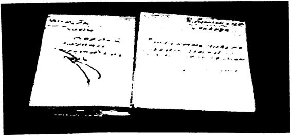
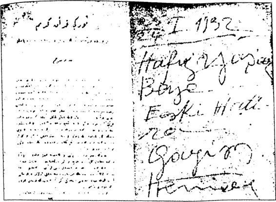
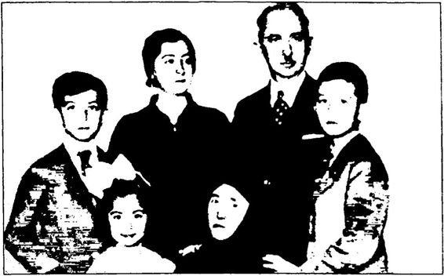
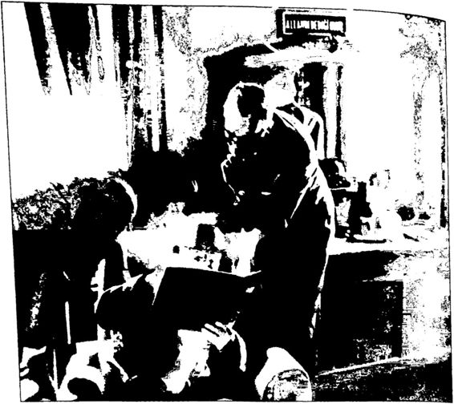

Atatürk Kur’anı Kerim’in ruhunu en iyi anlayan devlet adamları mızdan biridir dersek abartmış olmayız.
Atatürk, annesi Zübeyde Hanım’ın yönlendirmesiyle daha 78 yaş larında Selanik’te Kur’an’la tanışmıştır. Atatürk, yıllar sonra (1927’de) ABD’nin ilk Türkiye Büyükelçisi C. H. Sherrill’in kendisiyle yaptığı röpor tajda, çok küçükken bir ay boyunca Sıbyan Mektebi’ndeki din hocasının eve gelip ona annesinin arzu ettiği Kur’an eğitimini verdiğini söylemiştir.
Atatürk İle Allah Arasında adlı kitabımda belirttiğim gibi, Ata türk İslam’ın temel kaynağı Kur’an’a büyük önem vermiştir. Kur’an metninin yazılı olduğu “mushafa” saygı göstermiştir. Birçok defa Kur’an üzerine yemin etmiştir. Sıkça Kur’an dinlemiş, Kur’an okut muş ve Kur’an okumuştur. Kur’an’ın tecvit kurallarına göre musiki eşliğinde okunmasına ve hat ile yazılmasına önem vermiştir. Dahası Kur’an’ın tefsir ve tercümesiyle bizzat ilgilenmiş, pek çok ayetin ken dince yorumunu yapmış, çeşitli nedenlerle Kur’an’ın içeriğinden söz etmiş, zaman zaman konuşmalarında Kur’ani ifadeler kullanmış, en önemlisi de Kur’an’ın anlaşılması için mücadele etmiştir.
Atatürk Kur’an’ın hem orijinal Arapça metnini hem de Türkçe ve Fransızca çevirilerini defalarca incelemiştir. Nitekim okuduğu kitaplar arasında Cemil Said’in Kur’anı Kerim Tercümesi de vardır. Atatürk bu Kur’an tercümesinde özellikle Bakara ve Hud sureleriyle ilgilenmiş, bazı ayetlerin altını çizmiştir.
Atatürk’ü tanıyanlar da onun kütüphanesinde Arapça ve Türk çe tefsirli Kur’anlar olduğunu söylemişlerdir. Örneğin 1921 yılında Atatürk’le görüşen Ruşen Eşref, Atatürk’ün yazı odasında kitap dola bının üstünde bir Kur’anı Kerim görmüştür.
Ferit Tan, “Atatürk’ün masasında dikkatle Kur’anı Kerim oku duğunu gördümdemiştir.
Atatürk, 1923 yılında Dar’ül Hilafet’ül Aliye Medresesi’ni ziyaret etmiş ve Hüsnü Hat Müderrisi Fevzi Efendi’nin ders verdiği sınıfa gir miştir. Atatürk o sınıfta öğrencilere şöyle seslenmiştir:
“Ben de Timurlenk’in Kur’anı Azimüşşan’z vardır. Gayet kıy metlidir. Onun yazısı da pek güzel ve şayanı taklit ve temeşşuktur... Biz Tiirklerin yazıya da ehemmiyet vermiş olduğumuz bu Kur’anı Kerim’in yazısıyla da müsbettir.”
Kurtuluş Savaşı sırasında Anadolu’ya gelip Atatürk’e destek olan Şeyh Ahmet Sunusi, yıllar önce Trablusgarp Savaşı’nda Aynı Zara Za feri nedeniyle Derne Cephesi komutanı Mustafa Kemal’e yazısı, tezhi bi ve cildi kusursuz mükemmel bir Kur’anı Kerim hediye etmişti. Bu Kur’anı Kerim’i yıllarca yanında taşıyan Atatürk, 16 Mayıs 1919’da Samsun’a çıkmak için İstanbul’dan hareket ederken bu Kur’an’ı annesi Zübeyde Hanım’a bırakmıştır.
Bugün Anıtkabir Atatürk Müzesi’nde sergilenen Atatürk’e ait eş yalardan biri de 3.5 cm uzunluğunda, 2.8 cm genişliğinde ve 1 cm yüksekliğindeki mini Kur’anı Kerim’dir. Atatürk’e ait bu Kur'anı Kerim'ın kapağı yaldızlı, gümüşten yapılmış muhafazası ise bezeme lerle süslüdür.* Atatürk’ün silah arkadaşlarından Fahrettin Altay Paşa, Atatürk, "Kur'anı Kerim’de anlaşılması güç kısımlar olmakla beraber pek bü yük hikmetler bulunduğunu takdir ederdidemiştir.k uranı Kerim’i bazen kendisinin okuduğu, bazen de başka birine okutup dinlediği, Atatürk'le ilgili bize ulaşan bilgiler arasındadır.
İsmail Hakkı Tekçe, *Kur*an okunmasından haz duyardı. Fakat okuyanın mana ve derinliğini mutlaka bilmesini isterdi. Onun için eza nt Türkçe yapmış, Kur'an’t tercüme ettirmek istemişti...”
Ünlü ses sanatçısı Safiye Ayla da Atatürk’ün Kur’an okutup dinle diğini söyleyenlerdendir:
“ Atatürk haftanın belirli günlerinde Saadettin Kaynak, Mısırlı İbra him, Hafız Yaşar, Hafız Kemal ve Hafız Nubargibi dönemin önde gelen hafızlarına Kuran okutturmuş, okunan ayetlerin tefsirini yaptırmıştır. Yapılan tefsirleri ilgiyle dinlemiş, sorular sorarak onlara katılmıştır.”Şimdi de Atatürk’ün hep yanında olan kütüphanecisi Nuri Ulu su’va kulak verelim:
“Hafız Yaşar vardı. Atatürk onu sever ve çok beğenirdi. Bazı za manlar, ‘Hafızı çağırın,’ derdi. Hemen emri yerine getirirdik. Ya içki içmeden sofrada veya salonda Hafız Yaşar’ın makamıyla okuduğu Kur’anı Kerim surelerini huşu ile dinlediğini ve gözlerinden yaş ak tığını ve bu gözyaşlarını ceketinin sol üst tarafındaki mendil cebinde her zaman muntazaman bulundurduğu beyaz keten mendil ile sildiğine yakinen şahit olmuşumdur.”
Atatürk’ün Kur’an dinlediğine tanık olanlardan biri de Hafız Sa adettin Kaynak’tır.
“Bir Türk musiki gecesinin sonunda Atatürk benden Mevlidi Şerifi her mısraını ayrı bir makamda olmak üzere okumamı istedi.
Sazlar da seni takip edecekler dedi. Emirleri üzerine ilk bahri okudum. Dikkatle dinledi. Takdir etti. Sonra da Kur’anı Kerim’in muhtelif su relerinden bölümler, ayetler okuttu. Hatta Nuri Conker’den de Kur’an okumasını istedi. O da bildiği Tebbet suresini okudu. Atatürk bütün bunlardan çok memnun olmuştu. ”
Atatürk’ün Kur’an okutup dinlediği hafızlardan biri de Hafız Ke mal Bey’dir. Kemal Bey’in kızı Velice Hanım’a kulak verelim:
“ Atatürk çağırırmış, babam da giderdi. Çok zevkli ve şık bir adam dı. Atatürk'e giderken en iyilerim giyerdi. Dolmabahçe’de sofradan kalkar başka bir mekâna geçerlermiş. Babamı sofraya oturtmazmış. Babam geldiğinde alır, başka bir odaya geçerlermiş. Atatürk, ‘Oku bana,' dermiş. Babam da döndüğünde Atatürk için dermiş ki: ‘Kur’an'ı bu kadar güzel tefsir edeni ben görmedim. O kadar güzel Arapçası var.' Hafız Kemal Bey’e ‘Gürses’ soyadını da Atatürk vermiş.”’’
Atatürk bir gün Beykoz İmamı Hafız Efendi’yi saraya çağırarak ona saatlerce Kur’an okutup dinlemiş ve okunan ayetleri de bizzat ken disi tefsir etmiştir.
Hüsrev Gerede, “Atatürk uluhiyetin yüksek sözlerini huşu ve ta’zimle hem de gözyaşlarıyla dinlerdi,'" demiştir.
Atatürk’ün kütüphanecisi Nuri Ulusu, Kur’an okuyan Atatürk’ü şöyle gözlemlemiştir:
“Atatürk bazı kereler çalışırken okuduğu tefsirlerin çok tesirinde ka lırdı ve de, ‘Hey büyük Allahım... Kuran'a inanmayan kâfirdir, bize na sıl yol gösteriyor? Bunları tüm dünyaya okutmalıyızdiye de söylenirdi. Sonra o an yanındaki bizlere, ‘Okurken ruhum coşuyor, size de oluyor mu?' diye sorardı, ama o anlarda gözleri hafifçe dolar ve kızarırdı. ”~° Vasfi Rıza Zobu, “Atatürk’ün Kur’an’a çok büyük hürmeti vardı. Ben, Hafız Yaşar, Hafız Hüseyin ve Hafız Mehmet’i onun yanında ta nıdım. Onların okuduğu Kur’an’ı saygıyla dinlerdi,” demiştir.
Atatürk, özellikle dinde Türkçeleştirme çalışmalarına ağırlık ver diği 1932 Ramazan ayı boyunca İstanbul’un en tanınmış hafızlarını neredeyse bir ay boyunca Dolmabahçe Sarayı’nda huzuruna kabul ederek onlarla sabahlara kadar din ve Kur’an sohbeti yapmış, Kur’an okutup dinlemiş, hatta bizzat kendisi Kur’an okumuştur.Önce Atatürk’ün uşağı Cemal Granda’yı dinleyelim:
”... Ramazanlarda Kadir gecesi ağzına kadehini koymazdı... Kadir geceleri sofra bile kurdurmazdı. Saygısı büyüktü. Bazen mevlit dinlediği de olurdu. Miraç bölümünde, ‘Gerçeklere çıktı Mustafa,’ de nince gözleri yaşamdı. O zaman hemen kolonya götürürdük, inanışı samimiydi. Bence Allah’a inanıyordu.”
Atatürk Ramazan aylarında Dolmabahçe Sarayı’na gelen ve oruç tutan misafirlerine özel ilgi göstermiş; iftar sofrasıyla bizzat ilgilenmiş, ibadet etmek isteyenlere yer göstermiştir.
Atatürk’ün kız kardeşi Makbule Hanım bu konuda şunları söy lemiştir:
"... Her Ramazan’in bir günü ve ekseriyetle Kadir gecesi bana ifta ra gelirdi. O gün, imkân bulabilirse oruç da tutardı, iftar sofrasını tam eski tarzda isterdi. Oruçlu olduğu zaman iftara başlarken dua ederdi.”Atatürk’ün Ramazan ayında kız kardeşi Makbule Hanım’a; “Ra mazan geliyor, annemize hatim okutmayı ihmal etme...” diye hatırlat mada bulunup, hatim okuyacak hafıza hediye edilmek üzere bir zarf içinde para verdiği bilinmektedir.
Atatürk’ün özel hafızı Hafız Yaşar Okur, Atatürk’ün Ramazan aylarındaki davranışlarım şöyle gözlemlemiştir:
"... Ramazanların Atam için çok büyük bir önemi vardı. Rama zan gelir gelmez ince saz heyeti Çankaya Köşkü’ne giremezdi. Kandil Geceleri de saz çaldırmazdı. Sadece beni huzurlarına çağırır, Kur’anı Kerim’den bazı sureler okuturdu. Ben okurken gözleri bir noktaya ta kılır, derin bir huşu içinde dinlerdi. Ruhunun çok mütelezziz olduğu her halinden anlaşılırdı.
Ramazanlarda bir ay müddetle Hacı Bayramı Veli ve Zincirli kuyu camilerinde şehitlerin ruhuna Hatimi Şerif okumamı emreder lerdi. O günlerde civar kasaba ve köylerden gelenlerle cami hıncahınç dolardı...”
Görüldüğü gibi Atatürk Ramazan ayları boyunca bazı alışkanlıkla rından da uzak durmuştur. Örneğin ince saz heyetini Çankaya’ya sok mamış, Kandil Geceleri saz çaldırmamıştır. Ayrıca Kur’anı Kerim oku muş, çeşitli camilerde şehitlerin ruhlarına Hatimi Şerifler indirtmiştir. Şimdi de Atatürk’ün kütüphanecisi Nuri Ulusu’ya kulak verelim:
“Atatürk otuz Ramazan geceleri başta Saadettin Kaynak Hoca ol mak üzere o devrin hafızlan olan Hf. Yaşar, Hf. Zeki, Hf. Küçük Yaşar, Hf. Burhan, Hf. Hayrullah beyleri davet ederdi ki bu hafızlardan Hafız Yaşar aynı zamanda Cumhurbaşkanlığı Alaturka Müzik Şefı’ydi. 1930 yılında emekli oldu. Ama ölene kadar hep Atatürk’ün yanındaydı. Soyadı Kanunu çıkınca Atatürk ona ‘Okur’ soyadını vermiştir. Atatürk davet ettiği bu hafızlardan tek tek din konusunda bilgiler alırdı. Ayrıca çok üze rinde durduğu Türkçe Kur’anı Kerim hakkında görüşlerini de sorardı.
Yine bir Ramazan ayı gecesinde Atatürk, Dolmabahçe Sarayı’nda aceleyle beni çağırttı. Derhal makamına girdim. O gece sofra şefimiz İbrahim Bey izinli olduğundan, benim görevim olmadığı halde düze nimi ve intizamımı beğendiğinden olacak beni istemişler. Odaya girdi ğimde, ‘Nuri oğlum hafızlar gelecek. Bu gece hafızların seslerini aksi sedasıyla daha güzel dinlemek için muayede salonundaki hususi daire ye yemek masasını kurun, ama acele ha: kaç dakikada kurabilirsin?’ Pek tecrübelisi olduğum bir konu değildi. Derhal lazım gelen emirleri gerekli kişilere tebliğ ettim, herkes işe koyuldu. Hakikaten tam otuz dakika sonra her şey tamam gibiydi. Sevdiği çiçekleri de elimle tam masaya koyarken Atatürk, misafirleriyle birlikte gelmez mi? Masanın yanına geldi. Şöyle bir göz ucuyla masayı, düzeni süzdü ve bana dö nerek: ‘Aferin Nuri, İbrahim’i aratmamışsın, çiçekler de pek güzel...’ diye iltifatta bulundu. Zaten hep güzel şey yaptığımızda takdir ederdi. Amma bir de yanlış mı, hata mı yaptın, sadece bir bakardı ki, o bile yeterdi, içimize işlerdi.
Salona girdiler, sandalyeleri çekip oturdular, yemeğe başladılar. Konu yine Türkçe Kur’anı Kerim’di. Atatürk hepsiyle ayrı ayrı ilgilen di. Kur’anı Kerim’den okuttuğu duaları zevkle dinledi.”
Nuri Ulusu’nun dediği gibi gerçekten de Atatürk özellikle dinde Türkçeleştirme çalışmalarını başlattığı 1932 yılı Ramazan ayında sık ça İstanbul’un tanınmış hafızlarıyla bir araya gelmiş, onlarla Kur’an konuşmuş, Kur’an okutup dinlemiş, hatta bizzat Kur’an okumuştur.
Atatürk Kur’an'da özellikle Yasin, Tin, Bakara, İhlas, Fatiha, Ali Imran ve Şura surelerine çok büyük bir önem vermiş, Kur’an okumala rında genlikle bu sureleri tercih etmiştir.
Atatürk, bazen annesine, bazen Çanakkale şehitlerine, bazen de orduya Kur’an okutmuştur. Örneğin 1932 yılı Ramazan ayında Hafız Saadettin Kavnak’ın ordu müfettişlerine Kur’an okumasını, yine aynı yıl özel hafızı Hafız Yaşar Okur’un Çanakkale Şehit Mehmet Çavuş Abidesi’nde mevlit okumasını istemiştir.
Kur’an’a büyük saygı duyan Atatürk’ün en sevdiği hediyelerden biri Kur’an’dır. Atatürk hayatının çok değişik zamanlarında birçok kişi ve kuruma imzalı Kur’an hediye etmiştir.
 Atatürk’ün hediye ettiği Kur’an’lardan: 8 Teşrini sani (Kasım) 1925 Çankaya “Gazi Kız Numune Mektebi’ne dikkatle okunmak için... Hediye ediyorum. Gazi Mustafa Kemal”
 Cemil Sait Bey’in tercümesi olan bu Kur’an, 1932’de Atatürk tarafından Hafız Yaşar Okur a ithaf edilerek imzalanıp hediye edilmiştir.
Atatürk sevdiklerine Kur’anı Kerim hediye etmeyi adeta bir alış kanlık haline getirmiştir. Kütüphanecisi Nuri Ulusu bu gerçeği şöyle ifade etmiştir:
“İşte böyle gecelerden bazılarında Atatürk hafızlara Türk çe Kur’anı Kerim’i getirir ve de imzalayarak verirdi. Bu imzaladığı Kur’anı Kerim’lerden bir tanesi de çok sevdiğim arkadaşım, ağabeyim sofracıbaşı şefi İbrahim Ergüven de vardır. Atatürk, isteği üzerine ona da imzalayıp bir tane vermişti. Ancak ben de çok arzu ettiğim halde utanıp, isteyip alamadım.”* Zaman zaman da Atatürk’e Kur’anı Kerim hediye edilmiştir. Örneğin 1923 yılında kendisine küçük boyutlarda bir Kur’anı Kerim hediye edilmesi üzerine, “Bence kıymetini takdire imkân olmayan bu hediye Kur’anı Kerim’i en derin hürmetkar din duygularımla muhafa za edeceğim,” demiştir.
Atatürk’ün bugüne kadar gizli kalmış çok derin bir Kur’an bilgisi vardır. Öyle ki okuduğu bir tercüme Kur’anı Kerim’de geçen hataları bulabilecek, bir okul ziyaretinde din kültürü hocasına bir ayetin anla mim oracıkta tercüme ettirip o tercümedeki hataları bir bir sıralayabi lecek derecede iyi bir Kur'an bilgisidir bu.
Hep gizli kalmış olsa da gerçek şu ki, Atatürk gerçek bir Kur’an dostudur. Nitekim bu nedenledir ki Türklerin Müslüman olduğu 8. ve 9. yüzyıllardan beri yapılamayanı yaparak Kur’anı Kerim’i en iyi şekilde Türkçeye tercüme ettirmiştir. Elmalılı Hamdi Yazır’a Kur’anı Kerim’in tefsir ve tercümesini hazırlatması, Buhari Hadislerini Türkçe ye çevirtmesi, 50 Hutbe Kitabı'nı hazırlatması ve 100.000 takım dini kitap bastırıp bütün ülkeye ücretsiz dağıttırmasınm anlamı, “Şuura muhalif, ilerlemeye engel hiçbir şey içermiyor,” dediği İslam dininin doğru anlaşılmasıdır.
Atatürk’ün Kur’an kültürüne ilişkin örneklerden sonra Atatürk’ün İslam dinine hizmetlerinden söz edelim kısaca:
Atatürk, 19231938 arasında Dinde Öze Dönüş Projesi kapsa mında çok önemli çalışmalar yapmış, bir anlamda 13. yüzyılda ardına kadar kapanan “içtihat kapısını” biraz olsun aralamayı başarmıştır.O her şeyden önce İslam dininin “akla, mantığa uygun bir din” olduğu gerçeğini hatırlatmıştır. Din ile hurafeyi birinden ayırmak için müca dele etmiştir.
Özetlemek gerekirse Atatürk:
Atatürk döneminde ezanlar okunmaya devam etmiş, camiler açık olmuş, ibadet yasaklanmamış, Kur’an ilk kez anlaşılarak okunmuş, din adamlarının Allah ile kul arasına girmemesi, yani ruhban sınıfının oluşması ki zaten İslam’da ruhban sınıfı yokturengellenmiştir.
Şevket Süreyya Aydemir’in dediği gibi, "... Cumhuriyet, inancı ve ibadeti serbest bırakmıştı. Namaz kıldığı için tek bir kişi suçlanmadı. Camiye gitmek kimseye suç sayılmadı. Camiler daima açık kaldı. Din ve itikat, zaten dinin kabul ettiği gibi Allah'la kul arasında bir iç bağ lantı olarak kaldı.”
Falih Rıfkı Atay, Atatürk döneminde Müslümanlığın en güzel ve en sade şekilde yaşandığını şöyle ifade etmiştir: “Allah birdir. Muham med O'nun Peygamberidir, dersin. Dinin farzlarına inanırsın. Hak ye mez,, zulmetmez, çalmaz, kötülük etmezsin.
Din bundan ibarettir.
Gerisi akıl ve eğitim işidir. Asıl laisizm kafa laikliğidir.
Atatürk devrinde Tanrı ikidir mi denmiştir. Hayır! Muhammed O'nun Peygamberi değil midir mi denmiştir. Hayır! Beş vakit namaz dört vakte, otuz gün oruç yirmi dokuz güne mi indirilmiştir? Hayır!
Demek ki din denen şeye dokunulmamıştır. Ya ne yapılmıştır? Din dünya işlerinden ayrılmıştır. Gericilik nedir? Dünya işlerini yeniden din iş lerine katmak! Şeriatçılık, gelenekçi Atatürkçülüğü geçmişçilikle yıkmak!
Yani eski medrese cehaleti egemenliğini yeniden kurmak!”
Atay şöyle devam etmiştir:
“Atatürk devrinde ne namaza ne oruca dokunulmuştur. Camiler daima açıktır. Laisizm, dini mukaddes olmaktan çıkaran kara gelenek ve görenekleri kaldırmıştır. Dini yükseltmiştir.”
“Gerçekte Kur an'a göre oruç tutan Müslüman; fakat sövmeyen, iftira etmeyen, bin defa daha Müslüman, namaz kılan Müslüman; fakat hak yemeyen, zulmetmeyen, öldürmeyen, çalmayan bin defa daha Müs lüman, hacca giden Müslüman; ama hac parası ile bir yoksulu okutan, aç doyuran bin kat daha Müslümandır. Yatanı, milleti ve laisizm ile dini kurtaran Atatürk nice devirlerin en büyük Müslümanı idi.”
Buna rağmen yüzyılların yobazlığını, din istismarım birdenbire yok etmek mümkün olmamıştır.
“Terakkiperver Fırka kurulduğu vakit programının başına ‘hissiyatı diniyeye hürmet’ sözünü koymuştu. Ne demekti bu? Camiler açıktı. Ramazan’da isteyen oruçlu idi. İlmihal basılmakta idi. Şimdiki medreseler gibi dünya ve politika değil, sadece din adamı yetiştirmek için imamhatip okulları da açılmıştı...”
Atatürk’ün din dilini, Kur’an’ı Türkçeleştirmesi, hutbeleri ve ezanı Türkçe okutması, halifeliği kaldırması, laiklik ilkesi, Arap harflerini kaldırması, tekke ve zaviyeleri kapatması ve kılık kıyafet devrimi gibi uygulamalarından hiçbiri İslam’ın özüne aykırı değildir,. Hiç kimse şapka takmadığı için idam edilmemiş, İstiklal Mahkemeleri sırf dini gerekçelerle tek bir din adamını bile idama mahkûm etmemiştir. İdam edilenler ya vatan hainliğinden ya da devrimlere karşı halkı kışkırt maktan idam edilmiştir. Kadınların kılık kıyafeti konusunda da hiçbir devrim kanunu çıkarılmamıştır. Bu tür iddialar, Atatürk ve Cumhuri yet düşmanlarınca uydurulmuş yalanlar, safsatalardır.
Yaşar Nuri Öztürk’ün dediği gibi, “Cumhuriyet devrimleri, İslam’a aykırılık şöyle dursun İslam’ın bizzat talepleridir. Mustafa Ke mal yaptığı devrimlerle özgün İslam’ın ve Hz. Muhammed’in hasretine cevap getirdiği inancındadır. Biz de o inançtayız.”
Ya da Falih Rıfkı Atay’m dediği gibi, “Atatürk yalnız Türklüğü değil Müslümanlığı da kurtarmak istemişti.”
“Büyük İslam reformcusu Atatürk’tür. Hıristiyanlık reformundan beş altı asır önce İslam rasyonalistlerinin açıp ve bugünkü Batı mede niyetini o zaman yaratıp da, nakilci softalar ve taassup yüzünden iflas eden ve dünya egemenliği kurmuş Müslümanlığı bütün dünya devletle rinin mahkûmu haline getiren, köleleştiren medrese yobazlığı hüküm ranlığına son veren odur.”
Şimdi Başbakan R. Tayyip Erdoğan’a soruyorum: Bu Atatürk mü Kur’anı Kerim’i yasaklatmıştır? Bu Atatürk mü Kur’anı Kerim’in öğ renilmesini, öğretilmesini, okunmasını yasaklamıştır?
Hayır mı? O zaman şimdi de İsmet İnönü’nün Kur’an kültürünü inceleyelim kısaca...
2. İnönü’nün Kur’an Kültürü Başbakan R. Tayyip Erdoğan’ın İsmet İnönü’ye yönelik ağır eleş tirileri, Adnan Menderes’in İnönü eleştirilerine benzemektedir. İnönü, Menderes’in siyasi rakibidir, bu nedenle Menderes’in İnönü’ye yö nelik çok ağır eleştirilerini anlamak mümkündür. Ancak R. Tayyip Erdoğan’ın İnönü’ye yönelik çok ağır eleştirilerini anlamak zordur!
Menderes’in ve Erdoğan’ın dinsel söylemlerinin aksine İnönü, Türk siyasi tarihinin dinsel söylemi en az kullanan, hatta hiç kullan mayan liderlerinden biri, belki de birincisidir. Bu nedenle de yoğun dinsel söyleme alıştırılmış Türk seçmeni İnönü’nün bu durumunu ya dırgamıştır. Bazı çevreler onun dinden hoşlanmadığı için dini söylem kullanmadığını iddia etmiştir.
İsmet İnönü derin tecrübesiyle 1960’ların sonlarında, Türk siya setinde “dinsel söylemin” fazlaca kullanılmasının ve Nurcu hareketin desteklenmesinin, gelecekte “Türkiye’yi din savaşına sürükleyeceğini,” belirtmiştir.
İnönü 1966 yılında şöyle demiştir:
“En önemli olan din istismarıdır. Türkü Tiirke, Müslümanı Miislü mana düşman eden, din istismarıdır. Bugünkü iktidar din sömürmesini daha kırıcı, daha yaygın, vatanı sarsıcı bir şekilde kullanmaktadır...” Sonra sanki bugünleri görür gibişöyle devam etmiştir:
“Şimdi dinleyin: Bu adamlar ne yapacaklar dikkat edin. Din ta raftarı ama söylemiyor. Başbakan söylemiyor... Açıkça söyleyin Saidi Nursî tarikatına sapmışlardır. Bunların adına Nurcu denir. Milletimiz din savaşına sürüklenmek isteniyor.”
Dincilerin ve Nurcuların “İnönü düşmanlığının” arkasında, İsmet İnönü’nün Saidi Nursî’yi alabildiğince eleştirmesi vardır.
İnönü çok geçmeden haklı çıkmıştır. 1969’da dinci kışkırtma so nunda Kanlı Pazar Olayı yaşanmış, “ Ya Allah Bismillah Allahu ek ber!" diye bağıran dinle kandırılmış bir grup eli sopalı, satirli genç, ABD 6. Filosu’nu protesto eden iki genci öldürmüş, çok sayıda genci de yaralamıştır. Yine sonraki yıllarda bu ülkede dinle kandırılan kitleler Maraş, Çorum, Sivas olaylarına imza atmıştır.
İsmet İnönü’nün uzun politik hayatı boyunca dinsel söyleme baş vurmaması, dini istismar etmemesi, seçim konuşmalarında “Allah, Kitap, Kur’an” sözcüklerini ağzına almaması; kadim yobazlarımız ta rafından İnönü’nün “din düşmanı” olduğu biçiminde yorumlanmıştır. Ancak dinle beslenen kadim yobazlarımızın bu iddialarının aksine İnö nü, özel hayatında oldukça dindardır.
İsmet İnönü tutucu olmayan Müslüman bir ailede dünyaya gelmiştir. Özellikle annesi Çevriye Hanım’ın etkisiyle daha çocukluk çağından itiba ren dinini öğrenmiş ve dini vecibelerini yerine getirmeye başlamıştır. Ör neğin Kâzım Karabekir’e yazdığı bir mektuptan albaylığı döneminde oruç tuttuğu anlaşılmaktadır. Ayrıca cebinde küçük bir Kur’an taşımaktadır. 19321933 yılları arasında Ankara’da bulunan ABD Büyükelçisi Charles H. Sherrill onun Fevzi Çakmak kadar dindar olduğunu ileri sürmüştür.
İnönü’nün annesi Çevriye Hanım gibi eşi Mevhibe Hanım da son derece dindar bir kadındır. Yaşamı boyunca namaz kılıp oruç tutmuş, Kur’an okumuş, mevlit okutmuş, türbe ziyaret etmiş, kurban kestir miştir. Lozan’a gitmek için Bandırma’dan vapurla İstanbul’a geçerken namaz kılmış, İstanbul’da Süleymaniye Camii’nde teravih namazına gitmiştir. İnönü ve eşi Mevhibe Hanım, Pembe Köşk’te çocukları nın dini eğitimleriyle ilgilenmişlerdir. Belli aralıklarla Diyanet İşleri Başkanlığı’ndan bir hoca eve gelip çocuklarına din dersleri vermiş tir. Ramazanlarda ailece sahura kalkmışlar, Kurban bayramlarında kurbanlarını kesmişler, kandil günlerini o günlerin manevi atmosfe rine yakışır şekilde kutlamışlardır. 1950 yılının yılbaşı gecesi Mevlit Kandili’ne (Peygamber’in doğum gününe) rastladığı için İsmet ve Mev hibe çifti Pera Palas’ta düzenlenen geceye katılmamıştır.
Mevhibe Hanım’ın özel notları da İnönü ailesinin dindarlığını ka nıtlamaktadır.
İşte o notlardan bir bölüm:
“22 Nisan 1922’de Konya’ya giderken, saat 15:00’te Malatya’dan hareket ettik... Hamdi Bey’in evinde misafir ettiler... Ramazan’ın ilk günü oruçlu olduğumuzdan fena halde acıkmıştık. Ertesi gün 12’de yola çıkıp Kangal’a vardık... Oraya yerleştik. Yemekten sonra namaz larımızı kıldık.”
“2 Mayıs 1922 Salı: Semaverle çay getirdiler. Kahvaltı ettik. Na mazlarımızı kıldık. ”
“3 Mayıs 1922’de bizi otelden aldılar. Dört arabayla Abdiilvehap Gazi’yi ziyarete gittik. Kurban götürerek orada kestik. Etini tiirbedara bıraktık.” '
“5 Mayıs: Sabah saat 11.00’de otomobile bindik. (...) Saat 17.00’de şoförün yanlış manevrası üzerine arkaya doğru gitmeye baş ladık. Cenabı Hakk’a binlerce şükür bizi muhafaza etti. (...) Cenabı Hak, kağnı arabalarını bize tesadüf ettirdi. Onlara bindik.(...) Sabah uyandığım zaman yanımızda bulunan eşyaların geldiğini öğrendim.
Pek çok sevindim. Cenabı Hakk'a binlerce hamdüsena ettim. Şehir kışla çok güzel. Güzel camii var. Müezzinler ezan okudular. İstanbul'u hatırladım. Yarabbim sana nasıl arzı şükran edeceğimi bilmiyorum. İnşallah sevgili İstanbuluma da kavuşurum. "* “10 Mayıs Çarşamba: Bir kahve içtikten sonra arabalar geldi. Eve döndük. Abdest aldık...”
“18 M ay t s Perşembe: Sahur yedik. Biraz yattık... ”“19 Mayıs Cuma: Saat 17.15’te Paşa geldi. Cenabı Hakk’tn lütfü ihsanına binlerce şükür. Sağ salim bizi bu defa da kavuşturdu.”22 Nisan 1923 tarihli mektuptan: “Hammefendiciğim, duanızı üzerinden eksik etmediğinizi biliyoruz. İnşallah (İsmet Paşa) duanız savesinde hayırlı bir sulhu imza etmeye muvaffak olur. Paşa’ya da söy ledim: ‘Hanımefendinin duası ile başarılı olursunuz/ dedim. 'İnşallah,’ di\or. (...) İzmir’in Ramazanı nasıl? Camilere gidiyor musunuz? (...) Paşa (İnönü) sıhhattedir, ellerinizden öper. Hayır duanızı üzerinden eksik etmemenizi rica eder. ”
22 Nisan 1923 tarihli bir mektuptan: “Bugün Pazar, işe başla madılar. (...) Sabah inşallah başlayacaklar. Allah yardımcıları olsun. Duanıza muhtacız anneciğim. Mübarek Ramazanı Şerif hürmetine Cenabı Hak kusurlarımızı bağışlasın, bizi selamete çıkarsın. Paşa ve ben ellerinizden öperiz.”
18 Mayıs 1923 tarihli bir mektuptan: “İnşallah Kurban Bayramı'nı hayırlı sulh ile hep birlikte İzmir’de yapmamızı Paşa ile Cenabı Hakk’tan temenni ettik. Ben buranın bayramından bir şey anlamadım. ”
18 Mayıs 1923 tarihli aynı mektuptan: “Bayram olduğunu (İsviçre’de) Paşa (İnönü) anladı. Burada bulunan Mısırlı, Türk tale beler, otelin alt katma, salona gelmişler. Paşa’yı da, tekmil heyeti de davet etmişler. Talebeler tarafından heyete çay ziyafeti verilmiş. Mısırlı bir genç KUR’AN OKUMUŞ. Paşa, Mtsırlılar ve Suriyeliler nutuklar söylemişler. Tekrar KUR’AN OKUNMUŞ ve merasime son vermişler. Fotoğrafları alınmış...”
 İnönü ailesi: İsmet İnönü, annesi Çevriye Hanım, eşi Mevhibe Hanım ve çocuklarıyla İnönü’nün kızı Özden Toker de 2000 yılında Vatan gazetesine verdiği bir demeçte İnönü ailesinin “dindarlığını” şöyle anlatmıştır:
“Annem (İnönü’nün eşi) Kur’an okurken başım örterdi. Evimizde Ramazanlarda huzur dolu bir hava yaşanırdı. Ev halkı, başta Çevriye ve Mevhibe olmak üzere İslam dinine tümden saygılı ve bağlı kişilerdi. İsmet Paşa ve Mevhibe Hanım 'ın yatak odalarındaki duvarda koca man harflerle ‘ALLAH’IN DEDİĞİ OLUR' yazılı bir levha asılıdır. Bu yazı hiçbir zaman yerinden kaldırılmamıştır. Mevhibe, resmi ve sos yal görevlerinin yanında dinin vecibelerini de mükemmel olarak yerine getirirdi. Ailece sahura kalkılır, iftarlar neşe ile yapılırdı. "
Özden Toker, 14 Mart 2013 tarihinde Erzurum Atatürk Üni versitesi’nde katıldığı panelde babası İsmet İnönü ve annesi Mevhibe İnönü’yü anlatırken şöyle demiştir: “Evimizde Ramazanlarda hep oruç tutuldu. Namaz kılındı, hâlâ kılmıyor. Kur’anı Kerim okundu, hâlâ okunuyor. Bunların hepsi annemin bahamın döneminde yapıldığı gibi, şimdi de yapılmaya devam ediyor. Mesela benim doğduğum odada, babamın başucunda duvarda ‘Allah’ın dediği olur’ yazardı.”
İsmet İnönü’nün torunu Gülsün Bilgehan’ın yazdığı Mevhibe adlı kitapta, İnönü’nün bazı notları da yayımlanmıştır. O notlar içinde İs met İnönü zaman zaman namaz kıldığından söz etmiştir.
İşte o notlardan bir bölüm:
“Saat altı, sabah namazı vaktinden evvel Mevhibe beni uyandır dı... Kalkıp kırmızı odaya geçtik. Sabah namazını kıldım.”
İnönü’nün bugünkü bazı politikacılara örnek olması gere kendin istismarına karşı tavrını ve manevi dünyasının bilinmeyen lerini, İnönü’yü çok yakından tanıyanlardan dinleyelim. Ali Rıza Akbıyıkoğlu’na kulak verelim:
“İsmet Paşa, 1966 yılında kısmi seçim yapılacak illeri geziyor, konuşmalar yapıyordu. Batı Anadolu’da Denizli, Uşak, Afyon ve Kü tahya illerinde kısmi seçim yapılacaktı. Paşa, Denizli’de bir konuşma yaptıktan sonra Uşak’a gelmiş, büyük gösterilerle karşılanmıştır. Mev hibe Hanımefendi de bu geziye katılmıştı.
Paşa, parti binasında bir süre dinlendikten sonra Cumhuriyet Meydanı’nda bir konuşma yapacaktı. İl Parti teşkilatından bazı ar kadaşlar: ‘Paşam, dediler. Nurculuk propagandası bizim dışımızdaki bütün partiler tarafından açıkça yapılmaktadır. Bizi CHP’lileri dinsiz likle suçlamaktadırlar. Lütfen siz de yapacağınız konuşmada Allah’tan biraz bahsediverşeniz. Biz de bu dinsizlik suçlamasından kurtulmuş oluruz. ’
İsmet Paşa hiç ses çıkarmadı. Az sonra meydanda halka hitap etti. Dini siyasete alet eden partilere ve politikacılara özellikle çattı. Konuş masını ‘Allahaısmarladık’ sözüyle tamamladı. Parti binasına döndüğü müz zaman, İsmet Paşa, arkadaşlara tebessümle; ‘Dediklerinizi yaptım! Beğendiniz mi?’ dedi. Arkadaşlarım birbirine baktılar. Paşa, şaşkınlık gösterenlere şöyle dedi: ‘Bana Allah’tan bahset dediniz. Ben de halka hitaben ‘Allahaısmarladık’ diye seslendim. Memnun kalmadınız mı?’ Paşa, Uşak’tan sonra Afyon ve Kütahya illerine de gitmiş, buralar da da dini siyasete alet edenlere ve millet bütünlüğünü bölmeyi amaç layan Atatürk düşmanı Nurculara şiddetle çatmıştır. İsmet Paşa’nın bu tutumuna karşılık birçok parti liderleri, devlet ve hükümet sorumlu ları, zaman zaman dini sömürmekten çekinmemişlerdir. (...) Yıllardır yapılan din bezirgânlığına karşın İsmet Paşa laik çizgiden sapmamış, Atatürk’ün ilke ve inkılâplarından ödün vermemiş, fakat inancının ge reklerini gizlice yerine getirmiştir...”
Partili arkadaşları konuşmalarında Allah’tan, Peygamber’den söz etmesi gerektiğini söylediklerinde onlara, “Ben hepiniz kadar inançlı yım. Kur’an’m surelerini ezbere bilirim. Ben evimden besmelesiz çık mam. Ama ben, ‘Allah’a emanet,’ desem siz neler yaparsınızdiyerek bedeli ne olursa olsun din istismarından uzak duracağını ifade etmiş tir.
Din istismarına neden bu kadar karşı olduğunu en iyi anlatan ko nuşmalarından biri şudur:
“Ben irticanm kokusuna o kadar hassasımdır ki, Cumhuriyet’i kurduğumuz günden beri bilirim o kokuyu... Katil, hırsız, komünist, faşist hepsi canından korkar ama bu (mürteci, gerici) öleceği zaman kendisinin Hz. Peygamberin yanına gömüleceğini sanır. Bunlarda ölüm korkusu yoktur. Her şeyi yaparlar.”
İsmet İnönü’yü iyi tanıyanlardan Ali Rıza Akbıyıkoğlu anılarında İnönü’nün yatak odasındaki “Allah’ın Dediği Olur” levhasından şöyle söz etmiştir.
“Hasta olan İnönü’yü ziyareti sırasında yatak odasının duvarında asılı bulunan ‘Allah’ın Dediği Olur’ yazılı levhanın resmini çekip ya yımlayan Ulus foto muhabiri Hüseyin Ezer’e kırgınlığını, kendisinden beklenmeyen bir sertlikte açıklamıştır.”
Gazeteci Mete Akyol da İsmet İnönü’yle ilgili yazılarında Pem be Köşk’ten söz ederken, İnönü’nün yatak odasında başucunda asılı duran Kur’anı Kerim’den ve “Allah’ın Dediği Olur” levhasından söz etmiştir.
 İnönü’nün yatak odasındaki “Allah’ın Dediği Olur” levhası Ali Rıza Akbıyıkoğlu, İnönü’nün “samimi dindarlığını” şöyle göz lemlemiştir:
“Milletvekilliğim sırasında Ankara’da Bahçelievler 28. Sokak’ta otururdum. Aynı sokağın başında da aydın bir din adamı oturuyordu. Gelip geçerken selâmlaşır, hal hatır sorardık. Zamanla aramızda sami mi bir arkadaşlık kurulmuştu. Bir gün bana şöyle demişti:
‘İsmet Paşa’ya dinsiz diyorlar, deli olacağım. Ben yıllardan beri İsmet Paşa’nın evine cuma günleri hatim inmeye giderim.’
İsmet Paşa’nın laikliğe aykırı tutumlar karşısında diğer politi kacıların aksineaçık ve dürüst bir tavır takınması, onu gözlerimizde daha fazla büyütmüş, devleştirmiştir.”
İsmet Paşa’nın samimi dindarlığının bir başka tanığı da Avukat Mustafa Kaftan’dır. Son olarak Mustafa Kaftan’a kulak verelim:
“(İsmet İnönü), oruçlu günlere rastlayan toplantılarda oruçlu olanları olmayanlarla bir tutmaz, iftar ve namaz surelerinin hesabını kolayca yapardı.
Kişisel ve çok hassas bir konu olsa da, değerlendirmesini okuyucu ya bırakmak koşulu ile hatırasına saygısızlık kabul edemeyeceğim bazı olayları anlatmayı da görev sayarım.
Köşkten Meclis’e gidecektik. Paşa hazırlandı. Paltosunu giydi. Şapkasını yavaşça başına geçirdi. Pembe köşk sakindi. Ortada kim secikler yoktu. Kapıda makam arabası, birkaç koruma memuru ve şo för... Küçük odadan arabaya doğru çıkmak üzereydik. Paşa, gür ve tok bir sesle, askerlikten kalma alışkanlığıydı belki de Paşa’nın:
‘Hanımefendi, ’ diye seslendi.
Birkaç saniye sonra Mevhibe Hanım, yumuşak ve sakin adımlarla tahta merdivenden aşağıya doğru iniyordu.
Ben bir ara, ‘Paşam, Hanımefendiyi emretmiştiniz, geldiler,’ diye cek oldum ama nedense vazgeçtim. Paşa yürüyor...
Döndüm, Hanımefendiye baktım yavaşça, acaba o mu bir şeyler söyleyecek diye.
İkisi de bir şey söylemiyor, fakat Hanımefendi, hissedilir dudak hareketleriyle Paşasının arkasından ‘dua’ ediyordu.
Neden sonra, Paşa’nın çok sevdiği ve saydığı eşini ‘Hanımefendi’ diye çağırırken, arkasından dua etmesini istediğini anlayabildim.”
İsmet İnönü, bir politikacının dini istismar etmeden de siyaset ya pabileceğini gösteren en iyi örneklerinden biridir.
Başbakan Erdoğan’ın cami kapatan, Kur’an yasaklayan dolayı sıyla camiye, Kur’an’a ve dine karşıymış gibi topluma tanıttığı İnönü, mitinglerinde din istismarı olur diye “Allah” sözünü ağzına almayan, yatak odasındaki “Allah’ın Dediği Olur” levhasının fotoğrafının bir gazetede yayımlanmasına çok kızan, kutsal günlere özel önem veren, her sabah evden çıkarken eşinin dua etmesini isteyen gerçek ve samimi bir Müslümandır.
İsmet İnönü, Kur’an düşmanı, cami düşmanı, din düşmanı değil; din istismarcılarının, Allah’la aldatanların hep kazandığı bir ülkede, kaybetmeyi göze alarak dini istismar etmeyen, Allah’la aldatmayan, dinini, bütün samimiyetiyle kendi özel dünyasında yaşayan; Kur’an okuyan, dua eden, namaz kılan, oruç tutan kendi halinde bir Miislü mandır. İsmet İnönü de tıpkı Atatürk gibi, tıpkı Atatürk’ün annesi Zübey de Hanım gibi, tıpkı Atatürk’ün can dostu Fevzi Çakmak gibi, tıpkı Atatürk’ün yakın dostlarından Ankara Müftüsü Rıfat Börekçi gibi ve tıpkı Atatürk’ün “özel hafızı” Hafız Yaşar Okur gibi gerçek, samimi ve gösterişten uzak bir Müslümandır.
Cumhuriyet’i kuranların sade, samimi ve gösterişten uzak Müs lümanlıklarının yerini, 1950’lerden sonra maalesef cıvık cıvık bir din istismarı ve gösteriş merakı almıştır.
Şimdi Başbakan R. Tayyip Erdoğan’a soruyorum: Bu İnönü mü Kur’anı Kerim’i yasaklatmıştır? Bu İnönü mü Kur’anı Kerim’in öğ renilmesini, öğretilmesini, okunmasını yasaklamıştır? Yapmayın Allah aşkına!
Kendisi Kur’an okuyan, dua eden, namaz kılan; annesi ve eşi Kur’an okuyan, oruç tutan, namaz kılan İsmet İnönü cami düşmanı, Kur’an düşmanı; din düşmanı değildir, olamaz. Bu bir iftiradır.
Atatürk, Akıl, Bilim ve Kur’an Atatürk İslam dininin “akla ve mantığa uygun bir din” olduğuna inanmıştır. “Bizim dinimiz en makul ve en tabiî bir dindir ve ancak bundan dolayıdır ki son din olmuştur. Bir dinin tabiî olması için akla, fenne, ilme ve mantığa uygun olması lazımdır. Bizim dinimiz bunlara tamamen uygundur, ” diyen Atatürk, birçok konuşmasında İslam di ninin “akılcı bir din” olduğuna vurgu yapmıştır.
İşte birkaç örnek:
“Bilhassa bizim dinimiz için herkesin elinde bir değer ölçüsü var dır. Bu değer ölçüsü ile hangi şeyin bu dine uygun olup olmadığını kolayca anlayabilirsiniz... ”
“Hangi şey ki, akla, mantığa, milletin menfaatine, İslam’ın menfa atine uygunsa, kimseye sormayın, o şey dinidir...”
“Eğer dinimiz aklın, mantığın kabul ettiği din olmasaydı, en mü kemmel din olmazdı, en son din olmazdı...”
Onun bu inancının temel kaynağı Kur’anı Kerim’dir. Bu nedenle Kur’anı Kerim’i bir an önce en mükemmel şekilde Türkçeye tercüme ettirerek Müslüman Türk insanının Kur’an’daki “akılcı dinle” tanış masını istemiştir.
Gerçekten de Kur’anı Kerim incelendiğinde akla ve bilime vurgu yapıldığı görülecektir. Kur’anı Kerim’de akla, düşünmeye ve bilime vurgu yapılan ayetlerden bazıları şunlardır:
“... Size ayetleri gösteriyor ki aklınızı işletebilesiniz.” (Bakara 73) “... Bu yüzden akıllarını işletmez onlar.” (Bakara 171)
“... Aklınızı işletmeyecek misiniz?” (Bakara 76)
"... Aklınızı işletmeniz ümidiyle Allah ayetlerini işte size böyle açıklıyor.” (Bakara 242)
"... Eğer sen ilimden nasibin sana geldikten sonra onların boş ve iğreti arzularına uyarsan, işte o zaman kesinlikle zalimlerden olur sun...” (Bakara 145)
"... Allah bunları bilgi sahibi bir topluluğa açıklar...” (Bakara 230) “... Hâlâ aklınızı işletmeyecek misiniz?” (Ali İmran 65)
“... Hâlâ düşünmüyor musunuz?” (EnAm 50).
"... İlim dışı bir şekilde insanları şaşırtmak için yalan düzüp Allah’a iftira edenlerden daha zalim kim olabilir?” (EnAm 144)
“... Yanınızda, önümüze çıkaracağınız bir ilminiz var mı?” (En Am 148)
"... Yemin olsun ki biz onlara ilme uygun bir biçimde fasıl fasıl detaylandırdığımız bir kitap gönderdik...” (A’raf 52)
"... Düşünüp anlamıyorsunuz.” (Yunus 3)
"... Hele bir de akıllarını kullanmıyorlarsa...” (Yunus 42)
"... Allah pisliği, aklını kullanmayanların üzerine bırakır...” (Yu nus 100)
"... Hâlâ düşünmüyor musunuz?” (Hüd 30)
"... Hâlâ aklınızı çalıştırmayacak misinizi” (Hüd 51)
"... Biz onu size aklınızı çalıştırasınız (anlayasınız) diye Arapça bir kitap olarak indirdik...” (Yusuf 2)
"... Bütün bunlarda aklını çalıştıran bir topluluk için ibretler var dır.” (Rad 4)
“... Sadece aklı ve gönlü işleyenler düşünüp ibret alır.” (Rad 19) "... Ant olsun biz gökte burçlar oluşturduk...” (Hicr 16)
“... Rüzgârları dölleyiciler olarak gönderdik...” (Hicr 22) Kur’an’da “ilim” kökünden türeyen kelimeler 580 civarında yerde geçmektedir. Bunların 400 küsuru fiil halinde kullanılmıştır. Kur’an’da kullanıldığı şekliye ilim, geçtiği yere göre “bilimsel bilgi, akli bilgi, dene yime dayalı bilgi ve vahyi bilgi” anlamlarından birini ifade etmektedir. Kur’an’a göre ilmin karşıtı cehalettir. Bu nedenle Kur’an kendisinden önceki dönemi cahiliye dönemi olarak adlandırmıştır. “Kur’an hayat ta bir tek mürşit tanır, ilim.” Atatürk’e göre de, “En hakiki mürşit ilimdir, fendir.” İşte tam da bu noktada Muhammed Mustafa’nın mi rasıyla Mustafa Kemal’in mirası örtüşür. “Bilimin verileriyle aklın ve rileri arasında çelişme veya zıtlık imajı doğarsa öncülük, komutanlık, diizelticilik rolü bilime verilecektir. (...) Kur’an’ın en hayati tezlerinden biri şudur: Vahiy ilme teslim edilmedikçe ondan hayır gelmez.”İşte bu nedenle Atatürk’ün, “Benim manevi mirasım akıl ve bilim dir” ve “En gerçek yol gösterici akıl ve bilimdir, akıl ve bilim dışında yol gösterici aramak gaflettir, cehalettir” biçimindeki sözleri İslam’ın ana kaynağı Kur’an’a uygundur.
Atatürk, din konusundaki bilinmeyenlerin de bir gün bilim tara fından aydınlatılacağını düşünmektedir. Bir keresinde, bu düşüncesini şöyle dile getirmiştir:
“İnsanlıkta din hakkındaki ihtisas ve derin bilgiler, her türlü hura felerden ayıklanarak, gerçek ilim ve fennin nurlarıyla temiz ve mükem mel oluncaya kadar din oyunu aktörlerine her yerde tesadüf olunacak tır.” Atatürk Nutuk’ta yer verdiği bu satırların altını önemi dolayısıyla boydan boya çizmiştir.
Atatürk, Türk Devrimi ile hurafelerle, boş inançlarla mücadele ederek akıl ve bilimin önünü açmak istemiştir. Bu mücadelesinde bir taraftan 15. yüzyıldan beri akim ve bilimin merkezi olan Batı’ya yöne lirken, diğer taraftan yüzyıllardır Türkİslam dünyasında aklın ve bili min önünü kapatan çarpıtılmış, hurafelerle kaplanmış ve öz güzelliğini kaybetmiş İslam anlayışına savaş açmıştır. Bu nedenle de yüzyılların batıl itikatlarını, boş inançlarını din zanneden geleneksel İslami çevre lerle karşı karşıya gelmiştir.
Atatürk, Yeni Osmanlı ve Jöntürk aydınlarının başlattıkları ancak tamamlayamadıkları Dinde Öze Dönüş Projesi’ni geliştirip yeniden hayata geçirmiştir. Amacı, Kur’anı Kerim eksenli, asıl/öz/saf/gerçek İslam’a dönüşü sağlamaktır. Bunun için çok ciddi bir faaliyet programı belirlemiştir.
Atatürk, 1 Mart 1923 tarihli Meclis konuşmasında “Diyanet ve Vakıf işleri” başlığı altında bir anlamda Dinde Öze Dönüş Projesi’yle ilgili çalışmalara başlandığını şöyle ifade etmiştir:
“Diyanet ve vakıf işleri:
Efendiler, Şer'iye Bakanlığında geçen yıl içinde birisi Fetva Şurası, diğeri de ‘İslamiyeti İnceleme ve Uzlaştırma’ adı altında iki kurul oluşturuldu. Usul ve âdetlerin değişmesi ve bu değişme ile ortaya çıkan olayların ayet gereksinmeleri dikkate alınarak halledilmesi Fetva Şurası’nın bü tün çalışmalarını dayandıracağı bir temel olmalıdır. İslamiyet İnceleme Uzlaştırma Kurulunun görevleri içinde, İslam bilgilerinin Batı bilim kuralları ve felsefesiyle karşılaştırılması ve İslam ilminde en doğru iman, ilim, sosyal, sayısal, ekonomik konularla ilgili olayları incele mek ve sonuçlarını yayımlamak gibi sayılmaya değer önemli görevler bulunmaktadır. İnceleme için bir kütüphane kuruldu. İstanbul’dan, Avrupa’dan ve Mısır’dan bazı önemli kitaplar getirildi. Önemli birçok kitap da Avrupa ve Mısır’a ısmarlandı. Şer’iye Bakanlığı medreselerin birleştirilmesi ve modern kuruluşlara dönüştürülmesini amaçlamakta dır. Bakanlık modern içtihat ve tefsire kaynak olmak üzere bir İslam Kültür Merkezi kurulmasına büyük önem vermektedir.”
Görüldüğü gibi Atatürk, daha cumhuriyet ilan edilmeden önce Türkiye’de İslam diniyle ilgili bazı çalışmalar başlatıldığını belirtmiş tir. “Fetva Şurası” ve "İslamiyeti İnceleme ve Uzlaştırma” adlı iki ku rulun oluşturulduğunu, bu kurulların en iyi şekilde çalışabilmesi için Doğu’dan ve Batı’dan getirilen kitaplarla zenginleştirilmiş bir kütüpha nenin kurulduğunu ve “modern içtihat ve tefsir” çalışmaları için bir de “İslam Kültür Merkezi” kurulacağını açıklamıştır.
Bu kurum ve kuruluşlara 3 Mart 1924’te kurulan Diyanet İşleri BaşkanlığTnı da eklemek gerekir. Diyanet İşleri Başkanlığı, bir taraftan hurafe ve batıl fikirlerle kaplanmış, bağnaz bir İslam anlayışı yerine, olabildiğince sade, anlaşılabilir, pratik ve Türk sosyal hayatına uygun bir İslam anlayışının yerleşmesine çalışırken, diğer taraftan özellikle Atatürk’ün Kur’an tefsir ve tercümesi işini organize etmiştir.
Ahmet Taner Kışlalı, Atatürk’ün “İslam’a karşı değil cehalete kar şı savaştığınıbelirterek onun Dinde Öze Dönüş Projesi’nden şöyle söz etmiştir:
“Mustafa Kemal zamanla İslam dininin özünden uzaklaştığını, bir çok yabancı öğenin yorumlar ve boş inançlar olarakişin içine girdiğini düşüyordu. Çağdaş olmanın inançsızlıkla ilgisinin bulunmadığı kanısın daydı, ama bilerek, mantığını kullanarak inanmalıydı. Şöyle diyordu:
‘Tiirkler, dinlerinin ne olduğunu bilmiyorlar. Bunun için Kur’an Türkçe olmalıdır. Türk Kur’an’ın arkasından koşuyor; fakat onun ne dediğini anlamıyor. Benim maksadım arkasından koştuğu kitapta ne olduğunu Türk anlasın...’ Müslüman Türk balkı. Kur’an’ı kendi dilinden okuyup anlama olanağına ancak cumhuriyet rejimi sayesinde kavuştu.”
Özetle Atatürk, İslam dinini çepeçevre saran hurafeleri, boş inanç ları ayıklamak ve tekrar bu hurafelerin, boş inançların İslam dinini sarıp sarmalamasını önlemek için İslam dininin öz kaynağı Kur’anı Kerim’in anlaşılmasını amaçlamıştır.
Atatürk 1923 yılında, “Türk milleti daha dindar olmalıdır, yani bütün sadeliği ile dindar olmalıdır, demek istiyorum. Dinime, bizzat gerçeğe nasıl inanıyorsam buna da öyle inanıyorum. Şuura aykırı, iler lemeye engel hiçbir şey içermiyor,” diyerek din çalışmaların ama cının Türk milletinin “bütün sadeliği ile dindar olmasını sağlamak” olduğunu ifade etmiştir. Ona göre bu “sadelik”, ilerlemeye açık, akla uygun İslam dinin özünde, yani Kur’an’da saklıdır. Bu nedenle Kur’an’ın anlaşılması gereklidir.
Atatürk bir keresinde gerçek İslamiyetin Hz. Muhammed döne minde yaşandığını, daha sonra ise değişime uğradığını şöyle ifade et miştir:
“... Tereddütsüz diyebilirim ki, bugünkü İslam dini başka, Peygamber’in zamanındaki İslam dini başkadır. Gerçek İslamiyet, ya ratılıştan gelen mantıklı bir dindir. Hayalleri, yanlış düşünceleri, boş inançları hiç sevmez, özellikle nefret eder.”
İşte Atatürk’ün amacı Hz. Muhammed döneminde yaşanan o “gerçek İslam’ı” arayıp bulmaktır. Dahası Hz. Muhammed dönemin deki o gerçek İslam’ın evrensel mantığını gözler önüne sermektir. O gerçek İslam’ın yerini de çok iyi bilmektedir: Kur’anı Kerim. Bu ne denle Kur’an’ı herkesin anlaması için bir Kuran’ı anlama seferberliği başlatmıştır.
Prof. Yaşar Nuri Öztürk’ün dediği gibi; “Atatürk yobazı yakamız dan düşürecek elin. Kur’an’m eli olduğunu biliyordu. Onun için dini Kuran, Kur’an’ı din yapmak istedi. Hurafelerin yerine koyduğu bu Tanrısal kaynağı, Türk insanının kendi dilinde okumasını istedi...”Atatürk, Kur’anı Kerim başta olmak üzere din dilini Türkçeleşti rerek Türk Müslümanlığını Arapların, Acemlerin baskısından da kur tarmak istemiştir. 5 Şubat 1924’te İstanbul’da gazetecilerle yaptığı bir konuşmada şöyle demiştir:
“Bu milletin şimdiye kadar Arapların, Acemlerin din maskeli iğ falleriyle aldatılmış olduğunu ispat etmek isteyen bir adamım.”* Kur’an’ı Anlamak İslam’ın en büyük imamlarından Hanefi mezhebinin kurucusu Ebu Hanife, Kur’an’ın Arapçadan başka dillere çevrilip, namazda bile o dillerde okunmasının dini açıdan “caiz” olduğunu, asıl amacın “la fız”, yani “söz” değil “anlam” olduğunu asırlar önce ifade etmiştir.
Atatürk’ün Kur’anı Kerim’i Türkçeye tercüme ettirmesinin “İs lam dışı bir uygulama” olduğunu iddia edenler gerçek İslam’ı bilme yenlerdir. İslam’ın en büyük imamı Ebu Hanife (ö. 150/767) Müs lümanların Kur’an’ın anladıkları dildeki tercümesiyle namaz bile kılabileceklerini hükme bağlamıştır. Üstelik İmamı Azam bu büyük devrimi, Hıristiyanlıkta Reform hareketini başlatan Luther’den yak laşık 750 yıl önce gerçekleştirmiştir. Sadece İmamı Azam Ebu Hanife değil, ondan sonraki mezhep imamları da anadilde ibadete cevaz ver miştir. “ Yani Arap olmayan bir Miislümanın (hatta İmamı Azam'a göre Arap olan bir Miislümanm da) Kur’an’ın tercümesiyle anadildeki herhangi bir duayı okuyarak namaz kılmasının İslam'a, dine uygun olduğu. Miidafaai Hukuk ve Atatürk’ten yaklaşık 1200 yıl önce İslam ve din adına fıkıh bilginleri tarafından hükme bağlanmıştır.”
1879 yılında İstanbul camilerinde ders veren din bilgini Hoca $u avi, “Kur'an'ın her milletin dilinde okunabileceği hakkında İmanın Azam fetvasını unutarak hutbeleri bile Arapça okutuyoruz, ” diyerek Kur’an’ın, hutbelerin Türkçeleştirilmemesini eleştirmiştir.
Atatürk kendisinden yaklaşık 1200 yıl önce en büyük İslam âlimlerince kabul görmüş bir Kur’an gerçeğini 1200 yıl sonra Türkiye’de hayata geçirerek Kur’an’ı anadile,Türkçeye tercüme ettirmiştir.
Aslında Kur’an’ın başka dillere çevrilip çevrilmeyeceği sorusuna bizzat Kur’an yanıt vermiştir. Allah Kur’an’da “din” ve “dil” ilişkisini bütün çıplaklığıyla ortaya koymuştur.
İşte birkaç örnek:
“Biz her elçiyi kendi kavminin diliyle gönderdik ki, onlara (emre dilen şeyleri) açıklasın.” (İbrahim 14/4)
“Biz onu Arapça bir Kur’an olarak indirdik ki anlay asınız” (Yu suf 12/12)
“Biz sana böyle Arapça bir Kur’an vahyettik ki, kentlerin anası (Mekke’yi) ve çevresindekileri uyarasın.” (Şuara, 26/193195)
Eğer biz onu yabancı (dilde) bir Kur’an yapsaydık derlerdi ki (ayetleri anlayacağımız biçimde) açıklanmalı değil miydi? Acaba ya bancı söz mü geliyor?” (Fussilat, 41/44)
“Şüphesiz Kur’an Alemlerin Rabbi’nin indirmesidir. Ey Muhanı med apaçık Arap diliyle uyaranlardan olman için onu Cebrail senin kalbine indirmiştir(Şuara, 192195).
“Ey Muhammed, biz öğüt alırlar diye Kur’an’ı senin dilinle indir dik. Kolayca anlaşılmasını sağladık.” (Duhan, 58).
Görüldüğü gibi bizzat Allah, Kur’an’da çok açık ifadelerle, “Anla şılsın diye Kur’an’ı Arapça indirdik,” demiştir.
Asıl din düşmanlığı, Müslümanların asırlardır İslam’ın kutsal ki tabı Kur’an’ı anlamadan okumalarını savunmaktır.
Anlamadan okumak (Ümniyecilik) Kur’an’a göre şeytana hizmet etmektir. Şeytan insanı nasıl saptıracağını ifade ederken şöyle demiştir:
“ Yemin olsun, onları mutlaka saptıracağım, kuruntulara/hurafe lere/ıvılamım bilmeden okumaya iteceğim." (Nisa, 119)
Görüldüğü gibi bizzat Kur’an “anlamını bilmeden okumanın” şeytan dayatması olduğunu ve buna teslim olanların iflah olmayacak larını bildirmiştir.
Kur’an, okuduğunun anlamını bilmeden namaz kılmayı da yasak lamıştır.
“Ey iman edenler! Sarhoşken ne söylediğinizi bilinceye kadar, cü niipken de yolculuk halinde olmanız müstesna boy abdesti alıncaya kadar namaza yaklaşmayın." (Nisa, 43)
“Ne dediğini anlayıncaya kadar" ifadesi, okuduğunun anlamını bilmeden namaz kılmanın yasaklandığının kanıtıdır.
“Lanet olsun o namaz kılanlara!dua edenlere ki, namazlarından! dualarından gaflet içindedir onlar." (Maun, 45)
Görüldüğü gibi Kur’an “gaflet içinde kılınan namazları” lanet lemiştir. Gafletten kurtulmak için yapılması gereken ilk şey, namaz kılarken okunan duaların anlamını bilmek, Allah’ın huzuruna ne dedi ğini bilerek çıkmaktır.
Atatürk İle Allah Arasında aö\\ kitabımda dediğim gibi: “Kur’an ilk hedef olarak cahiliye Araplarını terbiye ve ıslah etme amacı taşıdı ğından Arapça olarak indirilmiştir. Bu Kur’an mantığından hareket edildiğinde, eğer Kur’an Türklere indirilseydi Türkçe, İngilizlere itıdi rilseydi İngilizce, Japonlara indirilseydi Japonca olarak indirilecekti. Kur’an’da belirtildiği gibi, ‘Kendilerine apaçık beyanda bulunsun diye her peygamberi kendi milletinin diliyle gönderdik’ (İbrahim, 4). Allah, cahil Arap toplumunu doğru yola sokabilmek için gönderdiği mesaim (Kur’an’ın) öncelikle Arap halkı tarafından anlaşılmasını amaçlamış tır. Bu nedenle Kur’an Arap çadır.
Atatürk, Kur’anı Kerim’i Türkçeye tercüme ve tefsir ettirerek “Kur’an’ın mutlaka anlaşılarak, bilinerek okunması gerektiği” şeklin de özetlenebilecek Kur’an emrini (Nisa 43) hayata geçirmiştir.
Atatürk’ün Dinde Türkçeleştirme Arayışları Atatürk, Kur’an’ın anlaşılması için verdiği mücadelede maalesef yalnız kalmıştır. En yakın arkadaşları birçok konuda olduğu gibi bu konuda da ona güçlük çıkarmıştır.
Falih Rıfkı Atay’a kulak verelim:
“Türk Ocağı’na gittiğimiz gün Kur’an’ı Türkçeye çevirmek konu sunu açtı.
Orada bulunan Kâzım Karabekir:
‘Kur’anı Azimüşşan Türkçeye çevrilmez Paşa Hazretleri!’
‘Niçin çevrilmez efendim? Bu sözünüz Kur’an’ın manası yoktur demektir.’
‘Hayır efendim ama, mesela elif, lam, mim... Ne diyeceğiz buna?’
‘Ne demektir elif, lam, mim?’
‘Meçhul efendim...’
‘Öyle ise karşısına bir sıfır koyar, çevirmeye devam edersiniz.”
Atatürk, din dilinin Türkçeleştirilmesi konusundaki çalışmalarına başlarken, birçok devriminden önce yaptığı gibi halkın nabzını yokla mış, bu konuya halkın nasıl baktığını öğrenmek istemiştir.
1925 yılından itibaren halkın arasında olduğunda her fırsatta Türkçe Kur’an’dan, Türkçe duadan, Türkçe hutbeden, özetle din dili nin Türkçeleştir ilmesinden söz etmiştir.
Örneğin 22 Mayıs 1926 tarihinde Bursa Türk Ocağı’nda din dili nin Türkçeleştirilmesi konusunda önemli mesajlar vermiştir. Bir bakı ma o gün bu konuda küçük bir nabız yoklaması yapmıştır:
“ Arkadaşlar, öteden beri fikrimi işgal eden bir husus var. Kur’an Türkçeye tercüme edilmeli midir? Yoksa edilmemeli midir? Bunu bir çok kişiye soruyorum. Kimisi muvafıktır diyor. Niçin muvafıktır di yorum, izah edemiyor. Kimisi de hayır muvafık değildir diyor. Onlara da niçin muvafık değildir diyorum, onlar da beni ikna edici bir cevap veremiyor.
Velhasıl şimdiye kadar beni tatmin eden cevap alamadım. Bilmem sizler bu konuda ne fikirdesiniz?”
Atatürk’ün yanıt aradığı bu soruya o sırada orada bulunan din adamları ellerinden geldiğince yanıt vermeye çalışmıştır. Atatürk bu ya nıtlar içinde en çok Hafız Ahmet Karaboncuk’un yanıtını beğenmiştir.
“Muhterem Gazimizdiye söze başlayan Hafız Ahmet, “Arzu bu yurduğunuz cevabı Kur'an bizzat diliyle veriyor,” demiş ve, “7nna enzel niihü Kuran'en Arapbiyen leal lekküm takliüm” ayetini okumuştur.
Bunun üzerine Atatürk, hafızdan ayetin anlamını açıklamasını is temiştir.
Hafız Ahmet ayeti şöyle açıklamıştır.
“Bu ayet diyor ki: Biz Kur’an'ı Arap kavmine indirdiğimiz için Arapça indirdik. Yoksa başka dillerde de indirebilirdik. Sebebi de Kur'an'ı yalnız okumak değil, manasını da anlamamız içindir.
Muhterem Gazimiz, mademki Kur'an'ın asıl maksat ve isteği içeri ğini anlamakmış, biz Türkler Arapça bilmediğimiz için Kur’an Tiirkçe ye tercüme edilmelidir ki manasını anlayabilelim. Sualinize Kur’an'dan okuduğum ayetten daha veciz bir cevap olur mu?”
Bu açıklamadan çok memnun kalan Atatürk’ün yüzünde alışılmı şın dışında bir dikkat ve memnuniyet ifadesi belirmiştir. Din adamları nın bu konuya anlayarak sahip çıkmasına çok sevinmiştir.
Atatürk, Hafız Ahmet’e, “Ayeti bir daha okur musun?” diye ses lenmiştir. Hafız, ayeti ve anlamını tekrarlamıştır.
Hafız Ahmet’in açıklamalarından memnun kalan Atatürk yerin den kalkıp hafızın elini sıkıp tebrik etmek için hafıza doğru yöneldiği sırada ileri atılan Hafız Ahmet, Atatürk’ün elini öpmüştür. Atatürk, “Hakikaten bu cevap beni tatmin etti. Çok memnun oldum,'' demiştir. 0 gün yaklaşık bir saat devam eden sohbet sırasında Atatürk halkla hep din dilinin Türkçeleştirilmesi konusunu konuşmuştur.
Atatürk, 1927’de Kayseri’de katıldığı bir açılış töreninde, orada bulunanlardan birinin bir hocayı ileri iterek, “İzin verirseniz hoca efen di dua etsin, ” demesi üzerine Atatürk, “Allah benim dilimden de anlar. Ona illa anlamadığımız bir dille ne söylediğimizi iyice bilmeyerek dua etmek mi şarttır?” diye karşılık vermiştir.
Atatürk’ün İslam dininin ana kayağı Kur’anı Kerim’i Türkçeye tercüme ettirmek istemesinin temel nedeni Kur’an’ın Müslüman Türk halkı tarafından anlaşılmasını sağlamaktır. Bu amacını bir keresinde şöyle dile getirmiştir:
“Tiirkler dirilerinin ne olduğunu bilmiyorlar. Bunun için Kur'an Türkçe olmalıdır. Türk, Kuranın arkasından koşuyor fakat onun ne dediğini anlamıyor, içinde neler var bilmiyor ve bilmeden tapınıyor. Benim maksadım, arkasından koştuğu kitapta neler olduğunu Türk anlasın.”
Atatürk 1930’ların başında bir taraftan Kur’an’ın Türkçeye tef sir ve tercüme çalışmalarını başlatırken, diğer taraftan halkı Türkçe Kur’an’a, Türkçe duaya, Türkçe hutbeye ve Türkçe ezana alıştırmak için de çalışma başlatmıştır. Bu çalışmaya 1932 yılında İstanbul’da biz zat başkanlık etmiştir.
İsmet Bozdağ’ın ifadesiyle:
"1932 yılının ilk günlerinde başlayan hazırlıklar ocak ayının bütün günlerini ve gecelerini doldurdu. Ankara’da Halkevleri Merkezi’nde, İstanbul’da Dolmababçe Sarayında iki kumanda merkezi kuruldu. 1933 yılının Şubatı’na denk düşen Ramazan ayında ‘Türkçe ibadet’ kampanyası başlatılacaktı.
Hareket TBMM’de, hükümette, basında ve kamuoyunda eşzaman lı olarak başlatıldı. Büyük Millet Meclisi’nde söz alan milletvekilleri gi rişimi destekliyorlar, bakanlar verdikleri demeçlerde konuyu işliyorlar, basın tam kadro kampanyanın yanında olduğunu gösteriyordu. ”Atatürk, 1932 yazının sonunda İstanbul’da, Dolmabahçe Sara yındaki yemekli bir toplantıda yanında bulunanlardan birine, “Sen I namaz kılıyormuşsun, doğru mu?” diye sormuştur. Soruya muhatap \ olan kişi, “Evet efendim, ara sıra kılarım,” demiştir. Atatürk bu sefer, J “Neden namaz kılıyorsun?” diye sormuş, o kişi de şöyle yanıt vermiş tir: “Efendim, ben namaz kıldıkça içimde derin bir vicdani huzur duyu yorum. Namaz kılarken kendimi, dünyadan ayrılmış hissediyorum. Bir an yükseliyorum, adeta Allah’la karşı karşıya kalmış gibi oluyorum.” Atatürk bu sefer de, “Namazda ne okuyorsun?” diye sorunca o kişi, namaz surelerini okuduğunu söylemiştir.
Bunun üzerine Atatürk adı geçen sureleri şimdi orada okumasını istemiş, o da okumuştur. Ardından Atatürk, “Bunların anlamı nedir?” diye sormuştur. Ancak o kişi okuduğu surelerin ne anlama geldiğini söyleyememiştir. Bunun üzerine Atatürk, sofradaki diğer kişilere de aynı soruyu sormuştur. Ancak hiç kimse bu soruya doyurucu yanıt verip de, o surelerin anlamını açıklayamamıştır.
Atatürk daha sonra yanındakilere “Yasin suresini” okuyup bazı ayetlerin anlamını sormuştur. Masadakilerden bazıları bu soruya ya rım yamalak yanıt verirken, bazıları hiç yanıt vermemiştir.
Bunun üzerine Atatürk tekrar ilk muhatabına dönerek şöyle bir soru daha sormuştur:
‘‘Peki, sen az önce adeta, ‘Allah’la karşı karşıya kalıyorum,’ de din. Ona kendi anlamadığın bir dilde hitap ettin. Bu söylediklerinden sen bir şey anlamadığın halde Allah’ın mutlaka Arapça anladığına na sıl hükmettin?”
Sorunun muhatabı, “Efendim, Kur’an Arapça nazil olduğu için...” demeye çalışırken araya giren Atatürk, “Evet, ama Kur’anı Kerim Arabistan’da Arap milletine kendi diliyle hitap ediyordu. Sorarım size Allah yalnız Arapların Allah’ı mıdır?” demiştir. Bunun üzerine o kişi, “Hayır efendim, Yüce Allah bütün âlemlerin Rabbi’dir,” deyince Ata türk, “O halde?...” diyerek karşılık beklemiş, ancak beklediği karşılığı alamamıştır.
Bu sırada orada bulunan Reşit Galip söz alarak şu açıklamaları yapmıştır:
“İbadet Allah’la kul arasında kalben birleşmek demektir. Bunun bizim anladığımız manada delili olamaz. Daha doğrusu kelimeler iba det vasıtası olamazlar. Ancak ibadet düşüncelerin Allah’a tevcihidir.”
Bunun üzerine Atatürk Reşit Galip’e, “İnsan düşüncelerini neyle ifade eder?” diye sorunca o da, “Şüphesiz kelimelerle efendim,” yanı tını vermiştir.
Atatürk, “O halde bilmediğimiz bir dilin kelimelerini kullanarak nasıl konuşur, his ve düşüncelerinizi nasıl ifade edersiniz?” diye sor muştur.
Reşit Galip, “Efendim, manalarını öğreniriz,” karşılığını verince Atatürk, şu çarpıcı analizi yapmıştır:
“Siz annenize sevginizi anlatmak için ‘ah chere maman’ derseniz, anneniz size ne der? ‘Deli’ demez mi? Anne Allah’ın yeryiizündeki timsalidir. Allah, anneyi, insanı yaratmak için vasıta eder, ona kendi kudretinden bir değil, birçok şeyler verir. Şu halde insan, anasına nasıl anadiliyle hitap ederse, Allah’a da yine anadiliyle hitap eder.”
Atatürk’ün bu basit ama derin örneklendirmesi, din dilinin Türk çeleştirilmesi çalışmalarının mantığını olanca açıklığıyla ve anlaşıldı ğıyla gözler önüne sermektedir.
Atatürk bütün devrimleri gibi din dilini Türkçeleştirirken de “ben yaptım oldu” mantığıyla değil, uzmanlarla, yakın arkadaşlarıyla, mil letvekilleriyle ve en önemlisi bizzat halkla görüşerek, tartışarak hare kete geçmiştir.
TBMM’nin bu kararı 23 Şubat 1924 tarihli Cumhuriyet gazete sine, “Meclis’in Kur’anı Kerim’in tercümesini kabul ettiği” şeklinde yansımıştır.
Ziya Gökalp, 1923’te Ankara’da yayımladığı Türkçülüğün Esas ları adlı kitapta “Dini Türkçülük”ten söz etmiştir. Atatürk, din dilinin Türkçeleştirilmesi konusundaki çalışmalarında her şeyden önce Ziya Gökalp’in bu “Dini Türkçülük” ilkesinden hareket etmiştir. Bu ne denle 1924 yılının başlarında bu konuları Ziya Gökalp’le görüşmüş tür. Atatürk’ün bir işaretiyle Diyarbakır’dan Ankara’ya gelen ve yeniden kurulan “Telif ve Tercüme Heyeti” başkanlığına seçilen Ziya Gökalp’in Atatürk’le Çankaya Köşkü’nde bütün gün boyunca yaptığı görüşmede neler konuşulduğu açıklanmamıştır. Ancak sonraki geliş melerden bu görüşmede Dinde Öze Dönüş Projesi’nden, özellikle de din dilinin Türkçeleştirilmesinden söz edildiği anlaşılmaktadır.
Atatürk Ziya Gökalp’ten sonra Dr. Reşit Galip’le görüşmüştür. Nitekim Atatürk’ü çok iyi anlayan bu genç doktor kısa bir süre sonra Halkevlerini yönetecek, milli eğitim bakanı olacak, ancak genç yaşta ölüp gidecektir.
Nitekim Atatürk’ün Dinde Öze Dönüş Projesi’nin en önemli aya ğını oluşturan din dilinin Türkçeleştirilmesi çalışmasını “Türk Müslü manlığı” diye projelendiren Dr. Reşit Galip’tir.
İsmet Bozdağ’ın yorumuyla, Ziya Gökalp’i kaynak alan Reşit Ga lip “imanı şuura yaymak” için, Atatürk ise “Anadolu Türkleri ile Orta Asya Türklerini din ve milliyet potasında bütünleştirmek için” işe ko yulmuşlardır.
Atatürk’ün Dinde Öze Dönüş Projesi konusunda fikir ve düşünce lerine başvurduğu bir diğer isim de eski Adalet Bakanı Seyyit Bey’dir. Atatürk, özellikle din dilinin Türkçeleştirilmesi konusunu gerçek bir İslam âlimi ve çok iyi bir hukukçu olan Seyyit Bey’le de uzun konuş muştur. Bu konuşmalardan birine tanık olan Yusuf Kemal Tengirşek’e kulak verelim:
“Bir gün Seyyit Bey’le birlikte Çankaya’ya çıktık. İkimizi birden çağırmıştı. Çalışma odasına aldı bizi. Yazı masasının kenarında eski yeni birçok kitap üst üste konmuş göze çarpıyordu. Nitekim biraz son ra Gazi açıkladı: ‘Türkçe ibadet üzerine yazılmış kitapları topladım. İçinde çok dikkate değer fikirler var. Sizi bunları tartışmak için davet ettim.’ Ben hemen ceketimin düğmesini ilikleyerek bir kenara ilişmeye çalışırken, ‘Yağma yok,’ dedi. ‘İnce politikayı bırak, sen de bildiklerini söyleyeceksin. ’
Öğleden az sonra, ikindi öncesi Çankaya’ya çıkmıştık, evlerimi ze dönerken tan ağarıyordu. Tek konu Türkçe ibadet... Aksiyonlar, reaksiyonlar. Daha o zaman Reşit Galip yok, hatta Kur’an meali bile hazırlanmamış. Ama Gazi Paşa bir ‘kültür ihtilali’ demek olan ‘Türkçe ibadet' reformunun birdenbire mi, yoksa benimsete benimsete mi oluş turulması gerektiğine kararlı değildi ve bizimle bu konuyu tartıştı. Ben, devrimin zaman içinde oluşturulmasından yana idim. Seyit Bey de beni destekliyordu. Gazi, radikal davranıştan yana idi. Nitekim yıllar son ra, kendisi gibi radikal davranıştan yana Reşit Galip'i bulunca hemen yola çıktılar. ”
Görüldüğü kadarıyla Osmanlı’nın son dönemlerindeki çalışmalar bir yana, Atatürk’ün Dinde Öze Dönüş Projesi’nin fikir babası Ziya Gökalp, proje mimarı ise Dr. Reşit Galip’tir. Atatürk, Seyyit Bey’in görüşlerinden de yararlanmıştır. Atatürk’ün söz konusu projesinin en önemli ayağı Kur’anı Kerim’in tefsir ve tercümesidir.
Kur’anı Kerim’in Türkçeye Tefsiri ve Tercümesi Kur’an tefsir tercümesi konusunda 1924 yılındaki Meclis ka rarından sonra çalışmalar hızlanmıştır. Diyanet İşleri Başkanlığı, Atatürk’ün isteği üzerine Kur’an’ın tefsir ve tercüme görevini, çok usta bir din âlimi olan Elmalık Hamdi Yazır ile dine hâkim bir söz ustası olan Mehmet Âkif Ersoy’a vermiştir.
Bu doğrultuda 1925 yılında Diyanet İşleri Başkanlığı, Elmalılı Hamdi Yazır ve Mehmet Âkif Ersoy ile bir “Kur’an tefsir ve tercü me sözleşmesi” yapmıştır. Bu sözleşme, Araştırmacı yazar Ubeydullah Kısacık’ın ulaşıp, Bir İstiklâl Âşığı Mehmet Âkif adlı kitabında yayım ladığı 10 Ekim 1925 tarihli orijinal belgeye göre Beyoğlu 4. Noteri’nde yapılmıştır. Sözleşmede Mehmet Âkif ve Elmalık Hamdi Yazır’ın yanı sıra Diyanet İşleri Riyaseti adına Aksekili Ahmed Hamdi Efendi’nin imzaları vardır. Sözleşmeye göre Diyanet İşleri Başkanlığınca, Mehmet Âkif ve Elmalık Hamdi Yazır’a Kur’an tefsir ve tercümesi karşılığında biner lirası peşin olmak üzere 6 bin lira ödeme yapılması taahhüt edil miştir. Sözleşmenin maddelerine göz atılacak olursa TBMM’nin (dö nemin CHP hükümetinin) ve Atatürk’ün bu Kur’an tefsiri ve tercümesi işine ne kadar büyük önem verdikleri çok açık bir şekilde görülecektir.
Bu Kur’an tefsiri ve tercümesi sözleşmesinde bu işin nasıl yapıla cağı sözleşme taraflarına en ince ayrıntısına kadar maddeler halinde yazılı olarak anlatılmıştır. Çok daha ilginci, sözleşmede yer alan bu teknik dini ayrıntıların (bu maddelerin) hazırlanmasında Atatürk doğ rudan etkili olmuştur. Şöyle ki, Kur’an tercümesine büyük önem veren Atatürk, nasıl bir tefsir ve tercüme istediğini 7 maddeyle açıklamıştır. Atatürk’ün Kütüphanecisi Nuri Ulusu anılarında bu “7 madde” hak kında şu bilgileri vermiştir:
“ Atatürk yapılacak tefsirle bizzat ilgilenmiştir. Nitekim benim dö nemimde de bu çalışmalar süratle devam etti. Sonuçta yedi ana mad deyle bu işi sonuçlandırttı. Tabii şimdi tafsilatlı (ayrıntılı) olarak bu maddeler pek hafızamda değil. Ana hatlar, hatırladığım kadar, ayet lerin inişlerinin sebepleri belirtilecek, kelimelerin dil izahatları olacak, ayetlerin anlatmak istediği din, hukuk, sosyal ve ahlaki konular hak kında bilgiler verilecek, bunlarla ilgili eski tarihi olaylar uzun uzun anlatılacak, vs.”
Atatürk’ün belirlediği bu 7 madde, Diyanet İşleri Başkanlığı ile Elmalılı Hamdi Yazır ve Mehmet Âkif Ersoy arasında imzalanan pro tokole şöyle yansımıştır:
Eserin başına Kur’an gerçeğini açıklayan ve Kur’an’la ilgili bazı önemli konuları anlatan bir önsöz (mukaddime) yazılacaktır.Bu sırada, 1928 Haziranı’nda Darülfünun İlahiyat Fakıiltesi’nde Fuat Köprülü’nün başkanlığında kurulan bir komisyon, hazırladığı ra porda din dilinin Türkçeleştirilmesini, dua ve hutbelerin Türkçe okun masını önermiştir.
Kuran tefsir ve tercümesi görevini kabul eden Elmalılı Hamdi Yazır ve Mehmet Âkif Ersoy hemen çalışmalara başlamıştır. Çalış malarını Mısır’a giderek orada sürdüren Mehmet Âkif, zaman içinde Kur’an’ı hakkıyla Türkçeye tercüme edemeyeceğini anlayarak tercüme işini yarım bırakmıştır. Ancak Elmalılı Hamdi Yazır, Kur’an tefsir ve tercümesini 1935 yılında yapıp bitirmiştir. Elmalılı Hamdi Yazır’ın Hak Dini Kur’an Dili adını verdiği bu tefsir ve tercüme 9 ciltlik 6433 sayfalık dev bir eserdir. Bu eser, 19361939 yılları arasında Diyanet İşleri Başkanlığı tarafından 10.000 takım olarak bastırılıp Türkiye’nin her yerine ücretsiz olarak dağıtılmıştır.
Elmalılı Hamdi Yazır’ın, Hak Dini Kur’an Dili adlı Kur’an tefsiri ne Atatürk’ün katkısıyla bir önsöz yazılmıştır. Atatürk’ün Kütüphane cisi bu gerçeği şöyle ifade etmiştir: “Eserin bitiminde kendi katkısıyla Kur’an m gerçeğini ve Kur’an’la ilgili özellikleri açıklayan güzel bir önsöz hazırlandı ve bastına girdi.”
Atatürk, sadece Kur’an’ın tefsir ve tercümesini değil, İslam dininin diğer önemli kaynağı olan hadisleri de Türkçeye tercüme ettirmiştir. Atatürk’ün işareti üzerine TBMM sağlam hadis kaynaklarının Türk çeye tercüme edilmesi görevini Ahmet Naim Efendi’ye vermiştir. Ah met Naim Efendi de dikkatli bir çalışma sonunda Buhari Tercüme ve Şerhi'ni hazırlamaya başlamış, ancak eseri tamamlayamamıştır. Bunun üzerine eseri tamamlama görevi Kamil Miras Hoca’ya verilmiştir. Ka mil Miras Hoca’nın 12 cilt olarak tamamladığı Buhari Hadislerinin Tercümesi ve Şerhi 1932 yılında bastırılıp Türkiye’nin her yanına yine ücretsiz olarak dağıtılmıştır.
Elmalılı Hamdi Yazır’ın 9 ciltlik Kur’an tefsiri ve tercümesi ile Ka mil Miras’ın 12 ciltlik Buhari Hadisleri Tercümesi ve Şerhi, Atatürk’ün din dilinin Türkçeleştirilmesi çalışmalarının en önemli ve en başarılı ürünleridir. Atatürk’ün 1930’larda hazırlattığı bu eserler, Türkiye’de bugün hâlâ aşılamamış en önemli İslam kaynaklarıdır.
Cumhuriyet’in ilk 15 yılında Elmalılı Hamdi Yazır’ın 9 ciltlik dev eseri başta olmak üzere Kur’an’ın tefsir ve tercümesiyle ilgili top lam 9 eser yazılıp yayımlanmıştır! Bu eserlerin toplam baskı adedi 100.000’e yakındır.
Camilerde Halka Türkçe Kur’an Okunması Başbakan R. Tayyip Erdoğan, “Tek Parti döneminde Kur’anı Kerim’i öğrenmek de öğretmek de, okumak da yasaklandı,” diyerek genç Cumhuriyet’i Kur’an’a karşı olmakla suçlamıştır. Ancak bu suç lama tamamen gerçekdışıdır.
Tek Parti döneminde bırakın Kur’an’ın öğrenilmesinin, öğretil mesinin ve okunmasının yasaklanmasını, o Tek Parti’nin kurucusu Atatürk, bizzat Kur’an’ın Türkçe anlamının halka okunarak Kur’an’ın en iyi şekilde halka öğretilmesi için 1932 yılında büyük bir “Kur’an’ı anlama seferberliği” başlatmıştır. Tam 9 gün İstanbul’un en önde gelen hafızlarını Dolmabahçe Sarayı’na kabul ederek onlarla Türkçe Kur’an, Türkçe hutbe, Türkçe ezan konusunda çalışmalar yapmıştır. Hafızlara camilerde Türkçe Kur’an’ı nasıl okuyacaklarından tutun da hangi su releri, hangi ayetleri okuyacaklarına kadar her şeyi tek tek anlatmıştır. Bazen eline Kur’anı Kerim’i alıp tane tane Kur’an okumuş, bazen bir hafıza Kur’an okutup dinlemiş, bazen de güzel Kur’an okuma yarış ması yapmıştır. Kur’an okunacak camilerin haberlerini önceden ga zetelerde manşetten duyurtmuş, halk da bu Kur’an ziyafetlerini takip etmek için İstanbul’un tarihi camilerini hıncahınç doldurmuştur. Ata türk, 1932 yılı Ramazan ayında İstanbul camilerinde gerçekleştirilen Kur’an ziyafetinin sadece İstanbul’la sınırlı kalmaması, bütün ülkenin bundan yararlanması için, Ayasofya Camii’nde okuttuğu Kur’anı rad yo ile bütün ülkeye duyurmuş, kendisi de radyosu başında Kur’an din lemiştir.
Bu çalışmalarda Atatürk’ün yanında olan Dr. Reşit Galip’e kulak verelim:
“Gazi, ‘(...) Sen, belli başlı duaları güzelce Tiirkçeye çevir, onların üzerinde tartışsak daha iyi olur,’ dedi.
Batıa ‘Tekbir’ /7e ‘Ezanın ilk olarak Türkçeleştirilmesi görevini verdi ve ‘Dikkatli ol/ dedi.
'Tekbirin bestesi en büyük Türk bestekârı Itrinindir. Itri, Tekbir'in kelimeleri ve heceleri bakımından vezinlerini hesap ettiği için, manalarını da göz önünde tutarak bestelemiştir. Türkçeleştirirken buna özellikle dikkat et.’
Bu konuda kimseye bir şey söylemememi de tembihledikten sonra odama çekildim. Akşama kadar çalıştım. Götürdüm, beğenmedi. Sof raya ikimiz oturduk ve sabaha kadar Tekbir üzerinde çalıştık.”
Sonraki gelişmeleri de Atatürk’ün özel hafızı Hafız Yaşar Okur’dan dinleyelim:
“1932’de Ramazan*m ikinci günüydü. Atatürk ile Ankara’dan Dolmabahçe Sarayı’na geldik. Beni huzurlarına çağırdılar. ‘Yaşar Bey,’ dediler. ‘İstanbul’un mümtaz hafızlarının bir listesini istiyorum. Ama bunlar musikiye de aşina olmalıdırlar.”
Bu emir üzerine Hafız Yaşar Okur, İstanbul’un en ünlü hafızla rının bir listesini yapmıştır. Listede şu isimler vardır: Hafız Saadettin Kaynak, Sultan Selimli Rıza, Süleymaniye Camii başmüezzini Kemal, Beylerbeyli Fahri, Darüttalimi Musiki azasından Büyük Zeki, Mual lim Nuri ve Hafız Burhan Beyler...
Hafız Yaşar Okur’a kulak verelim:
“O ana kadar bunların niçin çağrılmış olduğunu ben de bilmi yordum. O gün anladım ki, tercüme ettirilmiş olan bayram tekbirini kendilerine meşk ettirecektir. Hafızlar ikişer ikişer oldular ve şu metin üzerinde meşke başladılar: ‘Allah büyüktür... Allah büyüktür... Allah büyüktür...”
Hafız Yaşar Okur’un aktardığına göre Sultan Selimli Hafız Rıza bu tercümeye itiraz etmiş ve Bolu Milletvekili Haşan Cemil Bey’e dö nerek: “Efendim! Türkün Tanrısı vardır! Bu Tanrı şeklinde okunursa daha uygun olur kanaatindeyim,” demiştir.
Rıza Efendi’nin bu teklifi ilgi çekici bulunmuş ve bu konu derhal Atatürk’e arz edilmiştir. Atatürk, “Allah büyüktür... Allah büyük tür... Allah büyüktür...” şeklindeki tekbirin sadeleştirilmesi/Türkçe leştirilmesi önerisini, “Peki arkadaşlar. Tekbirin tercümesini okuyun bakalım,” diyerek karşılamıştır.
Bunun üzerine hafızlar:
“Tanrı uludur, Tanrı uludur Tanrı’dan başka Tanrı yoktur Tanrı uludur, Tanrı uludur Hamd ona mahsusturdiye okumuştur.
Atatürk, bu tercüme şeklini bir hayli beğenmiştir. O gece sabahın ilk ışıklarına kadar Kur’an, dua, tekbir, ezan konuşulmuştur.
O gece olanları yine Hafız Yaşar Okur’dan dinlemeye devam edelim: “Atatürk, Cemil Sait Bey’in Kur’an tercümesini getirttiler. Bizle rin tercüme konusunda tek tek fikirlerini aldıktan sonra hemen hemen sabaha kadar tartıştık. Daha sonra ayağa kalkarak ceketlerinin önünü iliklediler. Kur’anı Kerim’i ellerine alıp Fatiha suresinin Türkçe tercü mesini açıp halka okuyormuş gibi ağır ağır okudular. Bu hareketleriyle bizlerin halka nasıl hitap etmemiz gerektiğini göstermek istiyorlardı.
Sonra Atatürk, ‘Sayın hafızlar, içinde bulunduğumuz bu kutsal ay içinde camilerde okuyacağınız mukabelelerin tamamını okuduktan soma Türkçe olarak cemaate açıklayacaksınız. İncil de Arapça (Aram ca) yazılmış sonradan bütün dillere tercüme edilmiştir. Bir İngiliz İnci lini İngilizce, bir Alman İncilini Almanca okur. Herkes okunan muka belelerin manasını anlarsa dinine daha çok bağlanır, ’ dediler.
Sonra yanındakilere, ‘Gazetelere haber verin, yarın camilerde okunacak olan surelerin Türkçe tercümesi de okunacaktır,’ emrini ver diler. ”
O geceki toplantının tanıklarından olan Atatürk’ün kütüphanecisi Nuri Ulusu anılarında o gece yaşananları şöyle anlatmıştır:
“Atatürk, bu ilk tercüme Kur’an’ı (Cemil Sait’in Kur’an tercüme si) Hafız Saadettin Kaynak Bey, hafız arkadaşları Kemal, Nuri, Rıza, Fahri ve müzik öğretmeni Zeki ve Nuri Bey, Milli Eğitim Bakanı Reşit Galip Bey ve Milletvekili Cemil Bey ile ben ve arkadaşlarımın da oluş turduğu gruba, adeta kalabalık bir insan topluluğuna okuyormuş gibi tane tane okudu. Okuduktan sonra hafızlara dönerek, ‘Şimdi bundan sonra bu görev sîzlere düşüyor. Halkımıza bu Türkçe Kur’an'ı aynen benim okuduğum gibi yavaş yavaş, tane tane, ağır ağır okuyarak an latacaksınız. Halkımız Kur’an’ımızı tam anlamıyla bilecek ve de anla yacak,’ dedi.”
Atatürk ve Dr. Reşit Galip 1932 yılı Ramazan ayında belirlenen hafızlarla sık sık bu tür, din dilinin Türkçeleştirilmesi konulu toplan tıkır yapmıştır. Atatürk, camilerde halka Kur’an okuyacak hafızlar la bizzat ilgilenmiştir. Zaman zaman Kur’an’ın Türkçe tercümesinin halka nasıl okunacağını hafızlara bizzat göstermiştir. Hafız Yaşar Okur'un, Nuri Ulusu’nun ve Hafız Saadettin Kaynak’ın anılarından anlaşıldığı kadarıyla Atatürk o günlerde yüksek sesle ve büyük bir dikkatle Kur’an okuyarak hafızların dikkat etmeleri gereken noktalar üzerinde durmuştur.
Saadettin Kaynak anlatıyor:
“Dolmabahçe Sarayının büyük muayede salonunda saz takımı toplanmıştı... Atatürk, bir imtihan ve tecrübe yapmaya hazırlanmış görünüyordu. Elinde Cemil Said'in tercümesi Türkçe Kur'anı Kerim vardı.
Evvela Hafız Kemal'e verdi, okuttu fakat beğenmedi. ‘Ver bana ben okuyacağım,’ dedi.
Hakikaten okudu, ama hâlâ gözümün önündedir; askeri kumanda eder, emir verir gibi bir ahenk ve tavırla okudu. ”
Atatürk, 1932 yılında hafızlarla yaptığı sabahlara kadar süren din ve Kur’an konulu görüşmelerinden, fikir alışverişlerinden sonra onla ra, “Arkadaşlar, hepinizden ayrı ayrı memnun kaldım. Bu mübarek ay vesilesiyle camilerde yaptığımız mukabelenin son sahifelerini Türkçe olarak cemaate izah ediniz. Halkın dinlediği mukabelelerin manasını anlamasında çok fayda vardır, ” demiştir.
1932 yılı Ramazan ayında İstanbul’da Dolmabahçe Sarayı’nda Türkiye Cumhuriyeti’nin kurucusu Mustafa Kemal Atatürk’ün baş kanlığında ve yönlendirmesinde İstanbul’un en tanınmış dokuz hafızı dokuz gece sabahlara kadar Türkçe Kur’an, Türkçe dua, Türkçe tek bir, Türkçe ezan gibi konularla ilgilenmiştir.
Atatürk’ün 1932 yılı Ramazan ayında Dolmabahçe Sarayı’nda biz zat hazırladığı hafızlar İstanbul’un tarihi ve seçkin camilerinde halka Türkçe Kur’an, Türkçe dua, Türkçe tekbir ve Türkçe ezan okumuşlardır.
Atatürk, hafızlara verdiği talimatlarda Kur’an surelerinin, önce Arapça asıllarınm daha sonra da Türkçe anlamlarının okunmasını is temiştir. Atatürk ayrıca hafızlardan genç Cumhuriyet için de dua etme lerini istemiştir.
Atatürk, bu hazırlıklardan sonra 1932 Ramazanı’nda İstanbul’un Yerebatan Camii, Sultanahmet Camii, Ayasofya Camii, Süleymaniye Camii ve Fatih Camii gibi tarihi camilerinde Türkçe Kur’an, Türkçe hutbe ve Türkçe ezan okutmuştur.
İşte Bir Örnek: Ayasofya Camii’nde Türkçe Kur’an Atatürk, 1932 yılı Ramazan ayında din dilinin Türkçeleştirilmesi sürecinde Ayasofya Camii’nde çok görkemli bir dini tören düzenlen mesini ve bu törende okunacak Türkçe Kur’anı Kerim’in radyodan yayımlanmasını planlamıştır.
Daha önce Yerebatan ve Sultanahmet camilerinde gerçekleştirilen dini törenleri çok beğenen Atatürk, çok daha geniş katılımlı ve çok daha görkemli bir dini töreni Kadir Gecesi’nde Ayasofya Camii’nde yaptırmıştır. Atatürk, Ayasofya Camii’nde yapılacak büyük dini tö renin coşkusunu daha da artırabilmek için bu törenin özellikle Kadir Gecesi’nde yapılmasını istemiştir.
1932 yılı Ramazan ayının 26. gecesi Ayasofya Camii’nden yük selen Türkçe Kur’an nağmeleri aynı anda hem Ayasofya’nın o devasa kubbesinin altında toplanmış on binlerce Müslüman Türkün, hem de radyoları başındaki milyonlarca Müslüman Türkün kalbine işlemiştir.
Şimdi sözü, o gece Ayasofya Camii’nde Türkçe Kur’an okumakla görevli Hafız Yaşar Okur’a bırakalım:
"... Akşam namazından sonra kapılar kapatıldı. İlahiler ve ayini şerif okundu. Hoparlörler caminin her tarafına konulmuştu. Bu dini merasim Türkiye’den ilk defa radyo ile bütün dünyaya yayılıyordu.
Sıra mevlide geldi. Yirmi hafızın iştirakiyle okunan mevlit pek muhteşem ve ulvi oldu. Perde perde yükselen bu ilahi nağmeler Aya sofya Camii’nin nidalarından Türkiye sathına ve tüm dünyaya yayılı yordu. Cemaat sanki büyülenmişti. Hele muazzam cemaatin de işti rak ettiği tekbir sedaları insana havalanacakmış gibi bir hafiflik hissi veriyordu... ”
Cumhuriyet gazetesi, Ayasofya Camii’ndeki o görkemli töreni er tesi gün “70.000 Kişinin İştirak Ettiği Dini Merasim " başlığıyla man şetten vermiştir. Haberin alt başlıkları da şöyîedir:
“Diin gece Ayasofya Camii şimdiye kadar tarihinin kaydetmediği emsalsiz dini tezahürata sahne oldu. ”
“Ayasofya’da 40.000 kişi vardı.”
“Camiye sığmayan 30.000 kişilik bir halk kitlesi meydanları dol durmuştu. ”
“Namaz kılınırken (kalabalıktan) secde edilemiyordu. Türkçe tek bir halkı ağlatıyor, âmin sedaları asumana (göklere) yükseliyordu.” Cumhuriyet bu alt başlıklardan sonra ilk sayfada haberin ayrıntı larına yer vermiştir:
“Dün gece Ayasofya Camii’nde toplanan 50.000’e yakın kadın, erkek Türk Müslümanlar on üç asırdan beri ilk defa olarak Tanrılarına kendi lisanları ile ibadet ettiler. Kalplerinden, vicdanlarından kopan, en samimi, en sıcak muhabbet ve ananeleri ile Tanrılarından mağfiret dilediler.
Ulu Tanrı’nın ulu adını semaları titreten vecd ve huşu ile dolu olarak tekbir ederken, her ağızdan çıkan bir tek ses vardı. Bu ses, Türk dünyasının Tanrısına kendi bilgisiyle taptığını anlatıyordu.
Bir ihtiyar annenin gözlerinden çağlayan, bir genç delikanlının kirpiklerinden titrer gibi parlayan ve kalp kaynağından kopup gelen sevinç ve huşu ifade eden yaşlar bütün bu samimi tezahüratın çok kıy metli birer ifadesiydi.
Ayasofya Camii daha gündüzden, saat dörtten itibaren dolmaya başlamıştı. Mihrabın bulunduğu hattan son cemaat yerine kadar ca minin içinde iğne atılsa yere düşmeyecek derecede insan vardı. Kadın, erkek hep bir arada idi. Herkes birbirine Müşvik (sevecen) bir lisan ile muamele ediyor, yer olmadığı halde çekilerek yer vermeye çalışıyor, bu mukaddes gecenin ruhu niyetinden istifade etmek için koşup gelen herkes en ufak hareketlerinde büyük bir samimiyet ile meşbu (dolu) bulunuyordu.
Yatsı namazı yaklaşmıştı. Ayasofya artık dışarıdaki kapılarına va rıncaya kadar insanla dolmuştu. Ve bütün kapılar kapanmış ve binler ce halk dışarıda kalmıştı. Yalnız caminin içinde 40.000 kişi vardı. Dı şarıdaki avluda, şadırvanların bulunduğu meydanda da binlerce halk birikmişti. İçeride ve dışarıda olmak üzere 70.000 kişi bu 20 asırlık ibadetgâhı ihata etmişti (doldurmuştu). Ezan okundu... Otuz tane güzel sesli hafızın iştirak ettiği bir mü ezzin heyeti ile teravih kılındı. Halk o kadar mütekâsif (sıkışık) bir hal de idi ki, herkes birbirinin arkasına, ayaklarının arasına, hatta neresi rast gelirse secde ediyordu... Bir kısım halk da ayakta veya oturduğu halde namaz kılıyordu.
Teravih biter bitmez caminin içinde emsali görülmemiş bir uğultu başladı. Bu ne bir nehir uğultusuna, ne bir gök gürlemesine ne de başka bir şeye benzemiyordu. Herkes ellerini semaya kaldırmış dua ediyordu. Bu uğultu birkaç dakika devam etti. Müteakiben otuz güzel sesli hafız hep bir ağızdan tekbir almaya başladılar.
‘Tanrı uludur Tanrı’dan başka Tanrı yoktur Tanrı uludur. Tanrı uludur.
Hamd ona mahsustur.’
Bu Türkçe tekbir Ayasofya Camii’ni yerinden sarsıyordu. Halk da bu seslere iştirak ediyordu. Tekbir hitam (son) buldu. Hafız Yaşar Bey tarafından Mevlidi Şerif okunmaya başlandı. Mevlid, en güzel sesli ha fız tarafından okundu. Her bahis arasında Türkçe tekbir getiriliyordu. Peygamberimizin doğduğunu anlatan mısra okunmaya başlandı:
Hafız beylerin lahuti sesleri, bilhassa Hafız Kemal ve Hafız Bur han beylerin bu binlerce senelik Tanrı ibadetgâhını velveleye veren ses leri Ayasofya’nın muazzam kubbesinden etrafa dağılıyor, bütün kalp leri yeni yeni heyecanla dolduruyordu.
Mevlitten sonra Hafız Yaşar Bey, Türkçe Kur’an’a başladı. Teba reke suresini okudu. Müteakiben Hafız Rıza, Hafız Seyit, Hafız Kemal, Burhan, Fethi, Turhan beylerle otuz hafız hep birer birer muhtelif ma kamlardan Türkçe Kur’an okudular. Her sureden sonra Türkçe tekbir alınıyordu. Nihayet saat 10’da dini merasim son bulmuştu. Hafız İs mail Hakkı Bey tarafından Türkçe çok beliğ bir dua okundu. Duanın sonlarında Hafız Yaşar Bey, ‘Millet hâkimiyetinin tecelligâhı olan Tür kiye Cumhuriyeti’ni ilelebet payidar eyle Yarabbi! Ulu Gazimiz Musta fa Kemal Hazretlerinin vücudunu sıhhate daim eyle Yarabbi!’ diyerek dua ederken yine 40.000 kişi hep bir ağızdan ve candan gönülden, ‘Amin,’ diyorlardı. Dua bitti... Gene hafız beyler Türkçe tekbir aldılar ve ibadet nihayet buldu. Ayasofya'daki bu merasimi diniye radyo vasıtasıyla İstanbul ve Türkiye’nin her tarafında, bütün dünyada dinlenmiştir. Evlerde bile hususi içtimalarda (toplantılarda) Mevidi Şerif dinlenirken herkes hu zur ve huşu ile zevk ve heyecanla dinliyorlar ve camideki merasime iştirak ediyorlardı.
Ayasofya’da yer bulamayıp da bu dini ihtifali (töreni) yakından göremeyenler, şehrin muhtelif mahallerine konan hususi radyolardan merasimi takip etmişlerdir. Radyosu bulunan gazino ve kıraathaneler de hıncahınç dolmuş, halk bu suretle dini ihtifali dinleyebilmiştir.
Bu akşam Ayasofya Camii’nde yapılan ihtifal (tören) Ankara’nın her tarafından ehemmiyetle takip olunmuştur. Hemen her radyonun etrafında büyük bir kalabalık toplanmış ve Mevlidi Şerif, Türkçe Kuran surelerini derin bir tahassüsle (duyguyla) dinlemiştir. Bilhassa Gazi heykelinin duvarındaki büyük radyonun önünde muazzam bir kalabalık toplanarak yağmakta olan kara rağmen ana lisanlarıyla ya pılmakta olan ilahi hitabeyi saatlerce dinlemiştir.
Anadolu’nun her tarafından alman haberler, kemali tehalükle (ciddiyetle) şurada burada bulunan radyoların etrafında toplandıkla rım bildirmektedir.
Ajans bu büyük hadiseyi, daha evvelden Avrupa’nın her tarafına telgrafla bildirmiş olduğu için ecnebi memleketlerin pek çoğunda hadi senin ciddi bir alaka uyandırdığı tahmin edilmektedir. ”
O gece Ayasofya Camii’nin devasa kubbesini aşıp radyo aracılı ğıyla tüm yurda yayılan Arapça ve Türkçe Kur’an ve Mevlidi Şerif nağmelerini, Türkçe tekbirleri radyosu başında dinleyenlerden biri de Atatürk’tür.
Atatürk’ün kütüphanecisi Nuri Ulusu, Ayasofya Camii’ndeki dini töreni, o gece yaşananları ve radyosu başında Kur’an dinleyen Atatürk’ü şöyle gözlemlemiştir:
“Türkçe Kur’an, Ramazan’ın Kadir Gecesi’nde bu sefer, o zaman cami olan Ayasofya’da okunacaktı. Başta yine Hafız Saadettin ve Ha fız Yaşar olmak üzere, hafızlar Kemal, Sultan Selimli Rıza, Hafız Fah ri, Beşiktaşlı Rıza, Muallim Nuri, Hafız Zeki, Hafız Burhan, Türkçe Kur’an’ı hutbe şeklinde ‘Tanrı uludur, Tanrı uludur, Tanrı’dan başka Tanrı yoktur,’ diye hep birlikte tekbir ve tehlil ile birlikte okudukları mevlidi o gece Atatürk sarayda radyosundan dinlemişti.
Sırf bu mevlidi Ayasofya’dan dinleyebilmek için saray görevlileri camide bir teşkilat kurarak Atatürk’e radyo başında bu Kadir Gecesi’ni tüm teferruatıyla dinletme başarısını da gösterdiler. Ben de her zaman olduğu gibi radyoyu dinlerken zaman zaman yanında olurdum. Dua lar okunurken kendinden geçtiğini, zaman zaman ise göz pınarlarında yaşların biriktiğini net bir şekilde görerek izlediğim çok olmuştur. ”Atatürk, Ayasofya Camii’ndeki dini töreni çok beğenmiş ve özel olarak hazırladığı 9 hafızından ve diğer hafızlardan çok memnun kal mıştır. Beğeni ve memnuniyetlerini hafızlara bizzat iletmek için onları Dolmabahçe Sarayı’na iftara davet etmiştir. Atatürk’ün bu onurlandı rıcı ince davranışını Hafız Yaşar Okur şöyle anlatmıştır:
"... Ertesi akşam hafızlar saraya geldi. Üst katta muazzam ve mükellef bir iftar sofrası hazırlanmıştı. Atatürk de sofrada hafızlarla birlikte iftar etti. İftardan sonra hafızlara ayrı ayrı Kur’an okuttular. Hepsi teker teker iltifatlarına mazhar oldular. Huzurlarından ayrılır ken hafızları seryaver beyin odasına davet ettiler. Orada hafızlara 200 lira ihsan da bulundular. Sonra yine Atatürk’ün emriyle hafızlar oto mobillerle evlerine kadar götürüldü...”
Atatürk’ün kütüphanecisi Nuri Ulusu da Hafız Yaşar Okur’u doğ rulamıştır:
“Yerebatan ve Ayasofya camilerinde okunan dualardan sonra Atatürk tüm hafızları Dolmabahçe Sarayı’na davet etti ve benim vası tamla hepsini 200’er lirayla taltif etti (ödüllendirdi).”
Atatürk Arapça Kur’an’ı Yasaklamamıştır Atatürk düşmanlarının öteden beri tekrarlayıp durdukları yalan lardan biri de “Türkçe ibadet” çalışmaları yapan Atatürk’ün Kur’an’ın orijinal Arapça metnini yasakladığı ya da yasaklamayı planladığı şek lindedir. Oysaki, evet, Atatürk din dilinin Türkçeleştirilmesine büyük bir önem vermiş, bu konuda çok ciddi çalışmalar yapmış, Kur’an’ı, duaları, hutbeyi, ezanı Türkçeye tercüme ettirmiş, camilerde Türkçe Kur'an, Türkçe dua, Türkçe hutbe ve Türkçe ezan okutmuştur. Bütün bunları Müslüman Türk insanının dinini anlayarak, bilerek yaşaması için yapmıştır. Ancak Atatürk hiçbir zaman Kur’an’ın orijinal Arapça metnini yasaklamayı düşünmemiş, bu konuda hiçbir çalışma yapma mış, yaptırmamıştır.
Nitekim 1932 yılında camilerde Türkçe Kur’an, dua, tekbir, ezan, mevlit uygulamaları sırasında Kur’an’ın, surelerin ve duaların önce Arapça aslı, sonra Türkçe tercümeleri okunmuştur. Atatürk hafız lara verdiği talimatlarda Kur’an’ın önce Arapça aslının okunmasını, namazın bu şekilde kılınmasını, fakat daha sonra okunan ayet ve su relerin Türkçe anlamlarının açıklanmasını istemiştir. Bütün hafızlar Atatürk’ün bu talimatı doğrultusunda hareket etmiştir. Bu konuda aşı rıya kaçanlar ise cezalandırılmıştır.
Din dilinin Türkçeleştirilmesi çalışmalarının canlı tanıklarından dönemin din adamları, Atatürk’ün Kur’an’ın orijinal Arapça metninin okunmasını hiçbir şekilde yasaklamadığını ifade etmişlerdir. Örneğin Hacı Nimet Camii Hatibi Ercüment Demirer bu konuda şu değerlen dirmeyi yapmıştır:
"... Eğer Atatürk, Kur’an’tn aslının okunmasını yasaklamış ve sadece Türkçe olarak okunmasını uygulamış olsaydı, biz de bir Müs lüman olarak bunu Kur’an’a bir müdahale olarak kabul eder, tenkit ederdik... ”
Atatürk, Dinde Öze Dönüş Projesi kapsamında din dilinin Türk çeleştirilmesine büyük önem vermiş, öncelikle Kur’an’m Türkçe ter cümesinin hazırlanmasını ve Müslüman Türk halkının bu tercümeyi okuyup anlayarak, düşünerek ibadet etmesini istemiştir. O, kişisel ola rak Türklerin, Kur’an’ı anlayacakları dilde, yani Türkçe okumalarını, dualarını Türkçe etmelerini, hatta namazlarını bile Türkçe kılmalarını (Türkçe ibadet) istemiştir. Ancak bu isteğini hiçbir zaman Müslüman Türk halkına “zorla” kabul ettirmek gibi bir baskıcı tavır sergileme miştir.
Atatürk’ün genç Cumhuriyeti, ne Türkçe Kur’an’ı, ne Türkçe du ayı ne de Türkçe ibadeti zorunlu kılan ya da Arapça Kur’an’ı yasak layan bir yasa/kanun/kararnamc çıkarmıştır. Bu konuda hiçbir zaman hiç kimseye baskı yapmamıştır. Yalnızca ezanın, hutbenin ve salatın Türkçe okunmasını zorunlu kılan bir yasa çıkarmıştır.
Cumhuriyet’in Kur’an’a Hizmeti Atatürk’ün Türkçe Kur’an, Türkçe dua, Türkçe hutbe ve Türk çe ezan konusundaki çalışmaları İslam’ın ruhuna tamamen uygundur. Türkler 8. yüzyılda Müslüman olduktan sonra ilk kez Atatürk’ün ça lışmalarıyla gerçek anlamda Kur’anı Kerim’i anlama olanağına ka vuşmuştur.
Yüzyıllarca İslam’ın bayrağını en yüksekte ve en önde taşıyan Türk milleti, maalesef yüzyıllarca Kur’an’ını, dinini Arapça bilen bi nlerinden öğrenmek zorunda kalmıştır. Böylece İslam’da olmamasına rağmen fiilen bir ruhban sınıfı ortaya çıkmış ve bu sınıf dini kulla narak toplum üzerinde büyük bir baskı kurmuştur. Müslüman Türk insanı Atatürk’ün din dilini, özellikle Kur’anı Kerim’i Türkçeye ter cüme ettirmesine kadar dinini atadan, dededen gelen şekilde öğrenip yaşamıştır. Namazlarında Kur’an’dan ayetler, dualar okumuş, ama maalesef ne dediğinin farkında olmadan Allah’a yönelmiştir. Evinde Kur’an olmasına karşın ona dokunmaktan korkutulduğu için ve onu okuyup anlayamadığı için bir muhafaza içine koyarak evinin duvarına yüksekçe bir yere asmıştır. Atatürk’e kadar Kur’an, ölüye okunan, fal bakılan, saygı duyulan ama içinde ne yazdığı bilinmeyen sihirli, büyülü bir kitap olarak görülmüştür.
Bu duruma Mehmet Âkif Ersoy şu dörtlüğüyle dikkat çekmiştir:
“ Açarız nazmı çelilin bakarız yaprağına, Yahut üfler geçeriz, ölünün toprağına, İnmemiştir hele Kur'an, bunu hakkıyla bilin, Ne mezarlıkta okunmak, ne de fal bakmak için."
Ziya Gökalp de Mehmet Akif’e şu beşliğiyle destek vermiştir:
“Bir ülke ki camisinde Türkçe ezan okunur.
Köylü anlar manasını namazdaki duanın, Bir ülke ki mektebinde Türkçe Kur’an okunur, Küçük büyük herkes bilir buyruğunu budanın, Ey Türkoğlu işte senin orasıdır vatanın.”
Meşhur hikâyedir: “Minberde hatip bir Arapça hutbe okuyordu. Hutbe kurbanlık koyun üstüne idi. Koyunu nasıl yırtacaksınız, nasıl keseceksiniz, nasıl yüzeceksiniz yollu bir öğretim. Okuyan Arapça bil mediği için pek yüreğe işleyici bir makam tutturur. Cemaatin biri de gözyaşlarını tutamaz.
Yanındaki: ‘Ne ağlıyorsun birader?’ diye sorunca, 'Neler söylüyor baksana!’ diye büsbütün hıçkırır.”Atatürk, Kur’anı Kerim’i, hutbeleri ve ezanı Türkçeleştirerek, Türklerin her zamankinden daha çok, bilerek, anlayarak ve gerçekten hissederek Allah’a yaklaşmalarını sağlamıştır. Çünkü bir metin ancak anadilde okunursa gerçek anlamda hissedilip içselleştirilebilir. Yıllar önce Türkiye’ye gelen bir Filistinli Müftü, “Kur’an Tanrı’nın buyruk larının anlaşılıp öğrenilmesi için indirilmiştir. Kur’an’ı anlamayarak okumanın ne faydası varf” demişti. Müftü Türkiye’de ezanın Arapça mı yoksa Türkçe mi okunması gerektiği sorusuna da, “Siz birbirinizi hangi dilde çağırırsınız?” diye cevap vermişti.
Özetle Atatürk, 800 yıldan fazla bir zamandır Arapça olduğu içinTürklerin okudukları ancak anlayamadıkları Kur’an’ı Türkçeye tercüme ettirerek Kur’an’ın anlaşılmasını sağlamıştır. Dolayısıyla Müs lüman Türk halkının gerçek anlamda Kur’an’la tanışmasını sağlayan Atatürk’tür.
Çok daha önemlisi Kur’an’da Nisa 119’da şeytanın bir oyunu ola rak adlandırılan “anlamadan okuma” oyununu Atatürk bozmuştur.
Atatürk karşıtlarının iddia ettikleri gibi Atatürk, Yazı ve Dil dev rimlerini yaparak toplumun İslam diniyle olan bağlantısını kesme yi amaçlamamıştır. Eğer Atatürk’ün öyle bir amacı olsaydı 1928’de Arap harflerinden Latin harflerine geçirdiği Türkiye’de, Kur’an’ı Latin harfleriyle (Yeni Türk harfleriyle) Türkçeye tercüme ettirmez, Kur’an’ı Arapça olarak bırakırdı. Hutbeleri ve ezanı da Türkçeleştirmezdi. Böy lece Müslüman Türk toplumunu Kur’an’dan, dinden uzaklaştırmış olurdu. Ancak o, Kur’an’ın okunup anlaşılmasını istediği için Kur’an’ı yeni Türk harfleriyle Türkçeye tercüme ettirmiştir. Hutbeleri ve ezanı da anlaşılması, içselleştirilmesi, hissedilmesi için Türkçeleştirmiştir.
Cumhuriyet’in Din Kurumlan Tek parti CHP sadece Kur’anı Türkçeye tefsir ve tercüme ettire rek, Hz. Muhammed’in hadislerini (Buhari Tercüme ve Şerhi) Türk çeye çevirterek, bu tercümeleri on binlerce adet bastırıp ücretsiz dağı tarak, camilerde halka Arapça ve Türkçe Kur’an okutarak Kur’an’a hizmet etmemiş, ayrıca Kur’an ve din öğretilen kurumlar da açmıştır.
Diyanet İşleri Başkanlığı 3 Mart 1924’te 429 sayılı bir kanunla Şeriye ve Evkaf Vekâleti kaldırılıp Diyanet İşleri Başkanlığı kurulmuştur.
429 sayılı kanunun ilgili bölümleri şöyledir:
“f. Türkiye Cumhuriyetinde muamelatı nassa (Kur’an ve hadi se) dair olan hükümlerin çıkarılması ve yerine getirilmesi Türkiye Bü yük Millet Meclisi ile onun kurduğu hükümete ait olup, dini miibini İslam'ın bunun dışındaki itikad ve ibadete dair bütün hükümlerin ve işlerin yürütülmesi ve dini miiesseselerin idaresi için Cumhuriyetim merkezinde bir ‘Diyanet İşleri Başkanlığı ’ kurulmuştur.
Genç Cumhuriyet, din işlerini Diyanet İşleri Başkanlığı ile yürüt meyi amaçlamıştır. Laiklik ile din ve devlet işleri birbirinden ayrılmış tır, ancak tarikatların ve cemaatlerin pusuda beklediği bir ülke duru mundaki Türkiye’de devletin din işlerinden tamamen elini çekmesi mümkün olmamıştır.
Tevhidi Tedrisat Kanunu ve Din Öğretimi 3 Mart 1924’te 430 sayılı Tevhidi Tedrisat Kanunu (EğitimÖğ retim Birliği Yasası) yürürlüğe girmiştir. Kanunun 1. maddesi gereğince Türkiye’deki bütün okullar Maarif Vekâleti’ne (Eğitim Bakanlığı’na) bağlanmıştır. Böylece daha önce Şeriye Vekâleti’ne bağlı olan medre seler kapatılmıştır.
Atatürk o günlerde din eğitimi konusunda şunları söylemiştir:
“Mekteplerimizde ve bütün kültür kurumlarımızda milli eğitim esas kabul edilmiştir. Tuttuğumuz yol budur. Çocuk din eğitimini aile sinden alacaktır. Bu arada ilahiyat fakültesi gibi din eğitimini takviye edecek kurumlar da kurmak üzereyiz.”
Tevhidi Tedrisat Kanunu’nun 4. maddesi ile Türkiye Cumhuri yeti’nde din eğitiminin niteliği belirlenmiştir:
Madde 4: "Maarif Vekâleti yüksek diyanet mütehassısları yetiş tirmek üzere Darülfünun’da bir ilahiyat fakültesi tesis ve imamet gibi hidematı diniyenin (din hizmetlerinin) ifası vazifesiyle mükellef memur ların yetiştirilmesi için ayrı mektepler küşat edecektir (açacaktır).”Tevhidi Tedrisat Kanunu’nun 4. maddesine dayalı olarak 1924 yılında İstanbul Darülfünun’unda bir ilahiyat fakültesi ile Türkiye’nin değişik il merkezlerinde 29 imamhatip okulu açılmıştır.
İlahiyat Fakültesi Üç yıllık ilahiyat fakültesi, 19271928 yıllarında ilk mezunlarını vermiştir. Fakülte 53 öğrenciye sahiptir. Bu sayı, 19291930’da 35’e, 19301932’de 22’ye düşmüştür.
İmamHatip Okulları 1924 yılında ilk açıldığında 29 imamhatip okulunda 2258 öğren ci, 300’den fazla öğretmen vardır. İlkokula dayalı 4 yıllık öğretim sü resi olan bu okullarda ortaokul derslerinin yanı sıra meslek dersleri de verilmiştir. Mezun olanlar sadece imamhatip olabildiklerinden zaman içinde öğrenci yetersizliği dolayısıyla bu okullar kapatılmıştır.
İmam Hatip Okulları: 19241925’te 26’ya, 19251926’da 20’ye, 19261927’de 2’ye düşmüş ve 19311932 yılından sonra imamhatip okulu açılmamıştır.
Kur’an Kursları Cumhuriyet’in ilk Kur’an kursu bizzat Atatürk’ün emriyle İstan bul Süleymaniye Camii’nde açılmıştır. Atatürk’ün kütüphanecisi Nuri Ulusu, “(Atatürk) Hafız Yaşar'ı Süleymaniye Camii'nde açılan ilk Kuran kursuna hoca tayin etmişti,” demiştir.
19301933 yılları arasında Diyanet İşleri Başkanlığı’na bağlı 9 “Daru’l Kurra”/ Hafız ve Kur’an Kursu’nda 9 öğretmen ve 232 öğ renci vardır.
Kur’an kursu ve öğrenci sayısı giderek artmıştır.
19361937 öğretim yılında 16 Kur’an kursunda 14 öğretmen, 372 erkek, 37 kız öğrenci vardır.
İsmet İnönü cumhurbaşkanı olduğunda, 19401941 döneminde 56 Kur’an kursunda 56 öğretmen, 1380 erkek {bunların 159’u diplo ma alabilmiş) ve 309 kız (12’si diploma alabilmiş) öğrenci vardır.
19491950 döneminde 127 Kur’an kursunda 130 öğretmen, 6403 erkek (181 l’i diploma almış) ve 2303 kız (851 ’i diploma almış) öğren ci vardır.
Okullarda Din Dersleri Atatürk’ün eğitim öğretim politikasında din öğreniminin de yeri vardır. Atatürk din öğreniminden söz ettiği bir konuşmasında şöyle demiştir:
“Bizde ruhbanlık yoktur. Hepimiz eşitiz ve dinimizin hükümlerini eşit olarak öğrenmeye mecburuz. Her kişi, dinini, din işlerini, imanım öğrenmek için bir yere muhtaçtır. Orası da okuldur.”
“Genel olarak bütün köylüye okumak, yazmak ve vatanını, dini ni, dünyasını tanıtacak kadar coğrafi, tarihi, dini, ahlaki malumat ver mek ve dört işlemi öğretmek maarif programımızın ilk hedefidir.”
Bu doğrultuda 19231939 yılları arasında çeşitli düzenlemelerle din dersleri okul programlarındaki varlığını sürdürmüştür.